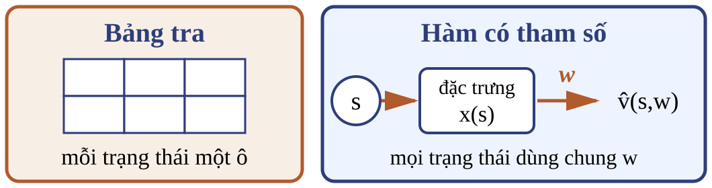
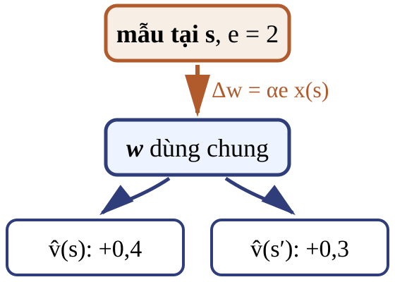
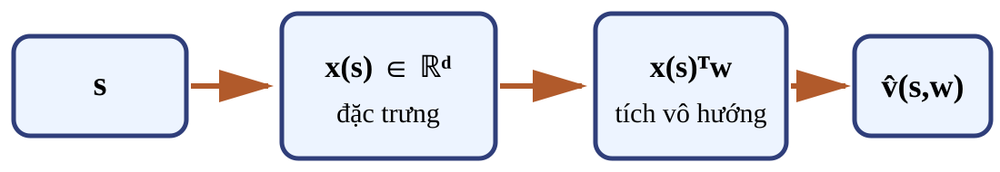
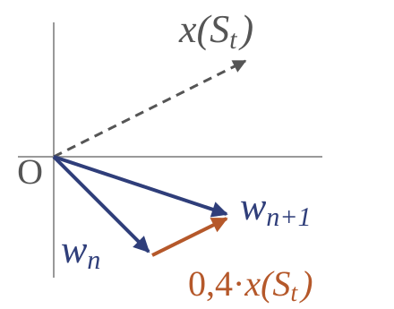
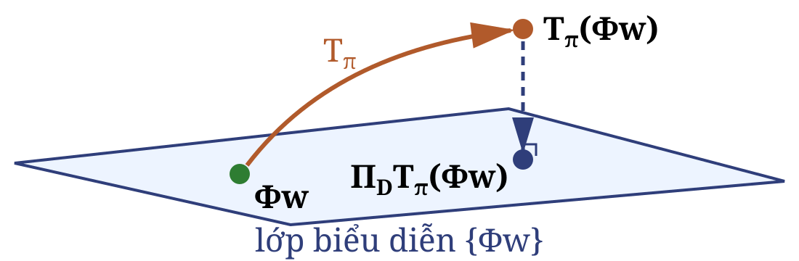
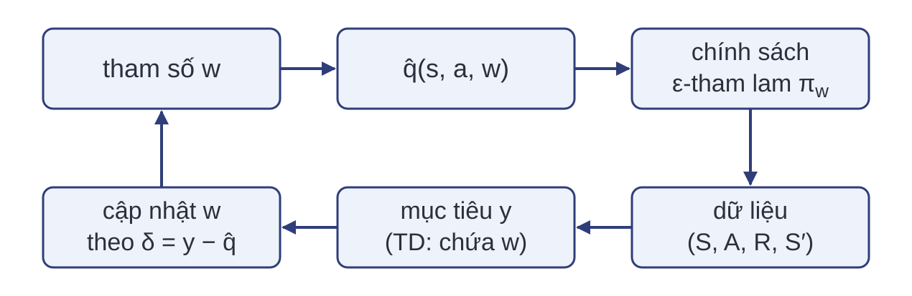
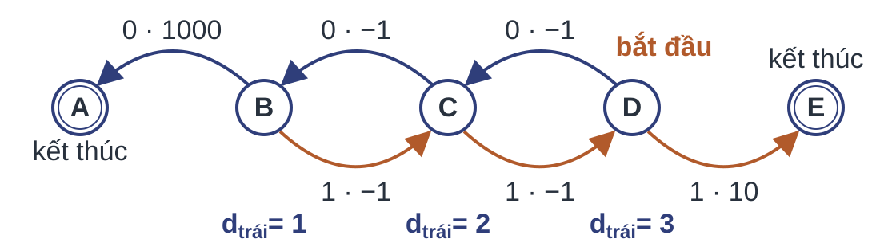
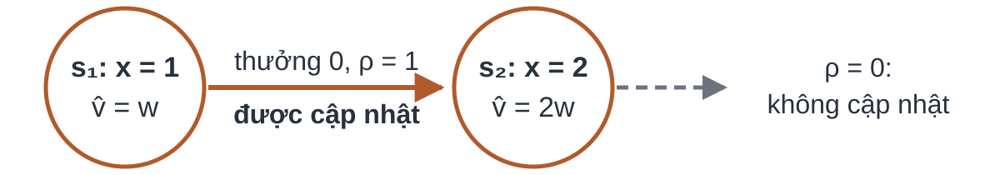
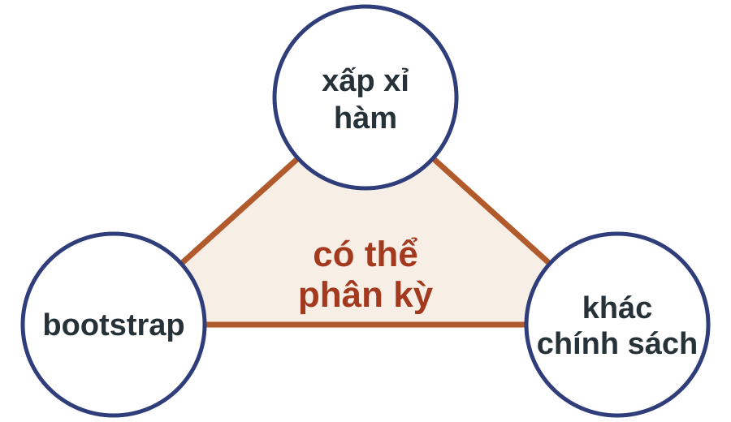

Xấp xỉ hàm trong Học tăng cường Học tăng cường · Bài 07 Tham số dùng chung thay bảng giá trị; mục tiêu cập nhật và phân phối dữ liệu quyết định có hội tụ hay không và hội tụ tới đâu.
Trường Đại học Công nghệ, Đại học Quốc gia Hà Nội
Năm học 2026–2027, học kỳ 1
Bảng giá trị của Bài 05–06 dành một ô cho mỗi trạng thái hoặc mỗi cặp trạng thái–hành động. Khi số trạng thái quá lớn, bảng được thay bằng hàm tuyến tính theo đặc trưng với vector tham số $w$ dùng chung, và Monte Carlo, TD(0), Sarsa, Q-learning được xây dựng lại trên hàm đó. Mục tiêu cập nhật là lợi tức hay mục tiêu chứa ước lượng hiện tại quyết định cập nhật là gradient đầy đủ hay bán gradient và điểm mà tham số hướng tới. Dữ liệu sinh theo chính sách đang đánh giá hay theo chính sách khác, với chính sách cố định hay đổi theo $w$, quyết định bảo đảm hội tụ còn hay mất.
Nguồn: Bài giảng gốc (2025–2026), trang 1, 21–23; ghi chú bài giảng Bài 07, phần mở đầu.
Tiên quyết và quy ước Nhắc lại: lợi tức (return) $G_t=R_{t+1}+\gamma G_{t+1}$, $G_T=0$; $v_\pi(s)=\mathbb E_\pi[G_t\mid S_t=s]$, $q_\pi(s,a)=\mathbb E_\pi[G_t\mid S_t=s,A_t=a]$ (Bài 03).
Nhắc lại: $\pi$ cố định, $\mathcal S$ hữu hạn: $P_\pi$ có phân phối dừng (stationary distribution) $d_\pi$, ${d_\pi^\top P_\pi=d_\pi^\top}$.
Nhắc lại: bước học Robbins–Monro: ${\sum_n\alpha_n=\infty}$, ${\sum_n\alpha_n^2<\infty}$.
Nhắc lại: Q-learning dạng bảng hội tụ tới $q_*$ (Bài 06) khi:
quá trình quyết định Markov (MDP) hữu hạn, phần thưởng bị chặn, $\gamma<1$; mỗi cặp cập nhật vô hạn lần, bước Robbins–Monro. Bước hằng thỏa điều kiện thứ nhất của Robbins–Monro nhưng không thỏa điều kiện thứ hai. Sarsa dạng bảng cần thêm điều kiện GLIE (ghi chú Bài 06, Mục 5). Khi chuỗi trạng thái hữu hạn và tối giản, phân phối dừng tồn tại, duy nhất và dương; $d_\pi(s)$ là tỉ lệ thời gian dài hạn chuỗi ở $s$. Khái niệm này cho trọng số của phép chiếu ở mạch TD(0).
Các bảo đảm dạng bảng dựa trên việc mỗi cặp có ô riêng, chỉ đổi khi chính cặp đó xuất hiện trong dữ liệu. Với tham số dùng chung, điều này không còn đúng.
Nguồn: ghi chú Bài 03, Mục 2–5; ghi chú Bài 05, Mục 2–4; ghi chú Bài 06, Mục 5; bài giảng gốc (2025–2026), trang 5–20.
Tiên quyết và quy ước Ký hiệu: không gian trạng thái $\mathcal S$ rất lớn, $m$ hành động; tham số $w\in\mathbb R^d$.
Xấp xỉ hàm (function approximation): dự đoán $\hat v(s,w)\approx v_\pi(s)$, $\hat q(s,a,w)\approx q_\pi(s,a)$.
$x(s)$: vector đặc trưng (feature) của trạng thái $s$, chọn trước.
$w_n$: tham số sau $n$ lần cập nhật, bước học $\alpha_n$; $t$: thời điểm của mẫu.
$R_{t+1}$ thuộc chuyển $S_t\to S_{t+1}$; giá trị tại trạng thái kết thúc bằng $0$.
Kỳ vọng $\mathbb E_\pi$ lấy theo quỹ đạo sinh bởi $\pi$ và động lực $p(s',r\mid s,a)$. Lượt kết thúc khi gặp trạng thái kết thúc; thuật toán dừng khi hết ngân sách lượt hoặc chuyển, hai việc này khác nhau. Chỉ số $n$ đếm số lần cập nhật, còn $t$ là thời điểm của mẫu dùng trong lần cập nhật đó; một lượt có thể cho nhiều lần cập nhật. Đặc trưng $x(s)$ không đổi khi học; dạng tuyến tính $\hat v(s,w)=x(s)^\top w$ là lớp hàm của cả bài. Số tham số $d$ thường nhỏ hơn nhiều so với số trạng thái.
Nguồn: ghi chú bài giảng Bài 07, Bảng ký hiệu; bài giảng gốc (2025–2026), trang 22–24.
Mục tiêu học tập Viết $\hat v$, $\hat q$ tuyến tính; tính mức lan; nhận diện nhập nhằng (aliasing). Tính tay cập nhật Monte Carlo, sai phân thời gian (temporal difference) TD(0), Sarsa, Q-learning. Phân biệt gradient đầy đủ (full gradient) với bán gradient (semi-gradient). Tính điểm cố định Bellman chiếu (projected Bellman fixed point); nêu giả thiết hội tụ TD(0). Phân biệt mục tiêu Sarsa, Q-learning; nhận diện bộ ba bất ổn (deadly triad). Kiểm giả thiết trước khi kết luận hội tụ từ kết quả chạy. Mục tiêu 1 ứng với Bài tập 07.1–07.3, 07.12, 07.15, 07.16 của ghi chú bài giảng. Mục tiêu 2: Bài tập 07.7, 07.10, 07.11, 07.13. Mục tiêu 3: Bài tập 07.4, 07.5, 07.7. Mục tiêu 4: Bài tập 07.8, 07.9, 07.17. Mục tiêu 5: Bài tập 07.13, 07.14, 07.18. Mục tiêu 6: Bài tập 07.6, 07.19.
Mục tiêu 6 đòi hỏi đọc kết quả chạy của hai notebook Lunar Lander và Flappy Bird dưới giả thiết của các định lý: một đường $\lVert w\rVert$ bị chặn chưa chứng minh hội tụ, một lần chạy tốt chưa chứng minh có bảo đảm.
Nguồn: ghi chú bài giảng Bài 07, Mục tiêu học tập; bài giảng gốc (2025–2026), trang 2–4.
Nội dung Mở đầu Hàm giá trị tuyến tính theo đặc trưng Monte Carlo gradient với hàm xấp xỉ TD(0) bán gradient và điểm cố định Bellman chiếu Sarsa bán gradient cho điều khiển Q-learning bán gradient và bộ ba bất ổn Tổng kết và chuyển tiếp Đọc trước: Sutton và Barto (2018), §9.1–9.5, §10.1, §11.1–11.3.
Lớp hàm tuyến tính và tiêu chí sai số giá trị ở mạch 2 là nền cho mọi mạch sau. Mạch 3 và 4 giữ chính sách cố định (bài toán dự đoán) và so hai mục tiêu cập nhật: lợi tức và mục tiêu bootstrap. Mạch 5 và 6 chuyển sang điều khiển, trước theo chính sách rồi khác chính sách. Mạch 7 đặt mỗi kết quả cạnh giả thiết không được bỏ. Thứ tự giữ thứ tự của bài giảng gốc, trang 22–45, và trùng thứ tự Mục 1–6 của ghi chú bài giảng.
Nguồn: bài giảng gốc (2025–2026), trang 2–4, 21; Sutton và Barto (2018), chương 9–11.
Vấn đề trung tâm Học giá trị và chính sách khi không lưu được mỗi trạng thái một ô.
Hàm $\hat v=x^\top w$: một cập nhật lan theo tích vô hướng đặc trưng. Monte Carlo: mẫu độc lập, Robbins–Monro, tới hình chiếu của $v_\pi$. TD(0): theo chính sách (on-policy) và $\gamma<1$, tới điểm cố định Bellman chiếu. Sarsa: chính sách đổi theo $w$, không bảo đảm chung. Q-learning: đủ bộ ba bất ổn, có thể phân kỳ. Mỗi câu trả lời phụ thuộc giả thiết của mạch cùng số và được mạch đó chứng minh hoặc minh họa. Điều kiện ở dòng 3 và 4 chưa đầy đủ: định lý Monte Carlo còn cần đặc trưng bị chặn và ma trận mômen đặc trưng xác định dương; định lý TD(0) còn cần chuỗi trạng thái tối giản, không tuần hoàn, bài toán không kết thúc, các cột đặc trưng độc lập và bước Robbins–Monro. Hai điểm đích ở dòng 3 và 4 nói chung khác nhau. Dòng 5 và 6 nêu sự vắng mặt của bảo đảm, không khẳng định mọi lần chạy đều thất bại.
Nguồn: bài giảng gốc (2025–2026), trang 22–45; ghi chú bài giảng Bài 07, Tóm tắt chương.
Khung chung của quy tắc cập nhật Đặt $y_t$ là mục tiêu cập nhật thay cho $v_\pi(S_t)$ chưa biết:
$$w_{n+1}=w_n+\alpha_n\bigl(y_t-\hat v(S_t,w_n)\bigr)\nabla_w\hat v(S_t,w_n).$$
Mục tiêu: lợi tức $G_t$, hay mục tiêu bootstrap (bootstrap target) chứa $w_n$. Dữ liệu: theo chính sách hay khác chính sách (off-policy). Chính sách: cố định, hay được cải thiện theo $w$. Bốn quy tắc của bài đều có dạng này và khác nhau ở ba điểm đối chiếu. Monte Carlo dùng lợi tức, dữ liệu theo chính sách cố định. TD(0) dùng mục tiêu bootstrap, tức mục tiêu chứa ước lượng hiện tại, cũng với chính sách cố định. Sarsa dùng mục tiêu bootstrap trên giá trị hành động, chính sách được cải thiện theo $w$. Q-learning thêm dữ liệu khác chính sách. Mỗi bước đi theo một điểm đối chiếu làm phân tích hội tụ khó hơn, và bốn quy tắc xuất hiện theo đúng thứ tự đó.
Bài toán dự đoán học $v_\pi$ của một chính sách cố định; bài toán điều khiển vừa đánh giá vừa cải thiện chính sách.
Nguồn: bài giảng gốc (2025–2026), trang 3, 27, 32; ghi chú bài giảng Bài 07, công thức (2.1).
2. Hàm giá trị tuyến tính theo đặc trưngMuốn ước lượng giá trị trên không gian trạng thái lớn, phải thay bảng bằng hàm tham số dùng chung.
Bảng tra · Đặc trưng · Tham số dùng chung · Sai số giá trị · Nhập nhằng
Khung cập nhật chung đã có, nhưng chưa có cách lưu giá trị khi không thể dành một ô cho mỗi trạng thái. Hàm $\hat v(s,w)=x(s)^\top w$ giải quyết việc đó; cái giá là một cập nhật lan sang trạng thái khác theo tích vô hướng đặc trưng. Sai số giá trị $J_\mu$ cho tiêu chí chọn $w$, còn nhập nhằng cho thấy phần sai số chỉ đổi đặc trưng mới giảm được. Tiêu chí $J_\mu$ và lớp $\{\Phi w\}$ là đầu vào của Monte Carlo gradient; đặc trưng bốn khối được dùng lại khi điều khiển.
Giới hạn của bảng tra Nhu cầu: học giá trị khi không lưu được một ô cho mỗi trạng thái.
Lunar Lander: sáu biến liên tục và trạng thái chạm đất ($3$ mức) cho ${9\,216}$ ô. Sau $2\,000$ lượt (episode), chỉ ${1\,896}$ ô có mẫu, ${20{,}6\%}$. Flappy Bird: $12$ biến liên tục; $10$ khoảng mỗi biến cho $10^{12}$ ô. Cập nhật ô của $s$ không đổi ô của trạng thái gần $s$. Bảng lưu $V(s)\approx v_\pi(s)$ hoặc $Q(s,a)\approx q_\pi(s,a)$ riêng cho từng trạng thái hoặc cặp. Với Lunar Lander, $9\,216=3\cdot4^5\cdot3$: sáu biến liên tục cho $3\cdot4^5=3\,072$ ô, thừa số $3$ cuối là trạng thái chạm đất của hai chân. $1\,896/9\,216\approx0{,}206$; $7\,320$ ô còn lại chỉ có giá trị khởi tạo, dù ô bên cạnh đã được ghé nhiều lần. Số liệu là một lần chạy đã nhúng trong notebook Lunar Lander của Bài 07, dữ liệu của thực hành Bài 05.
Bài giảng gốc nêu ba khó khăn: bộ nhớ và số mẫu, không tổng quát hóa, và dữ liệu không độc lập cùng phân phối (iid), không dừng. Khó khăn thứ ba đúng với mọi biểu diễn và xuất hiện lại trong giả thiết của các định lý hội tụ. Chia ô mịn hơn không giải khó khăn thứ nhất: số ô tăng thì số mẫu mỗi ô giảm.
Nguồn: bài giảng gốc (2025–2026), trang 22–23; ghi chú bài giảng Bài 07, Ví dụ 07.1; notebook Lunar Lander của Bài 07, mục 5.
Hàm giá trị có tham số Trực quan. Giá trị là tổ hợp các số đo $x(s)$ của trạng thái với hệ số chung $w$.

Vì $w$ dùng chung, một cập nhật đổi dự đoán ở nhiều trạng thái.
Ở bên trái hình, cập nhật một ô không chạm tới ô khác. Ở bên phải, mọi dự đoán đi qua cùng $w\in\mathbb R^d$, nên kinh nghiệm ở một trạng thái thay đổi ước lượng ở các trạng thái có số đo tương tự. Hai trạng thái của tàu chỉ khác nhau chút ít về độ cao có lợi tức gần nhau; muốn một mẫu ở trạng thái này cho thông tin về trạng thái kia, hai trạng thái phải dùng chung một phần biểu diễn. Số tham số $d$ thường nhỏ hơn nhiều so với số trạng thái, và hàm cho dự đoán cả ở trạng thái chưa gặp. Mô tả này chưa phải định nghĩa; mức thay đổi tại một trạng thái khác tỉ lệ với tích vô hướng giữa hai vector đặc trưng.
Nguồn: bài giảng gốc (2025–2026), trang 23; hình vẽ lại.
Ví dụ: một cập nhật lan sang trạng thái thứ hai Dự đoán $x^\top w$, $w=(0;0)$; hai trạng thái $x(s)=(1;1)$, $x(s')=(1;0{,}5)$.
Tại $s$: sai lệch $e=2$, $\Delta w=\alpha e\,x(s)$, $\alpha=0{,}1$. Tính $\Delta\hat v(s)$, $\Delta\hat v(s')$.
$$\begin{aligned}\Delta w&=0{,}1\cdot2\cdot(1;1)=(0{,}2;0{,}2),\\ \Delta\hat v(s)&=0{,}2+0{,}2=0{,}4,\\ \Delta\hat v(s')&=0{,}2+0{,}5\cdot0{,}2=0{,}3.\end{aligned}$$

Diễn giải: mẫu chỉ có tại $s$, nhưng $\hat v(s')$ cũng tăng $0{,}3$.
Sai lệch $e$ là mục tiêu cập nhật trừ dự đoán hiện tại. Dự đoán tại $s'$ tăng vì hai vector đặc trưng chung thành phần thứ nhất. Quy tắc $\Delta w=\alpha e\,x(s)$ được suy ra ở mạch Monte Carlo từ gradient của sai số bình phương; ở đây chỉ dùng hướng sửa của nó: $e>0$ nên $w$ dịch theo hướng làm $x(s)^\top w$ tăng. Kiểm tra lại: $\alpha e\,x(s')^\top x(s)=0{,}2\cdot1{,}5=0{,}3$.
Cùng cơ chế cũng lan sai lệch: nếu mục tiêu tại $s$ sai, dự đoán tại $s'$ bị kéo theo. Khi $x(s')^\top x(s)=0$, cập nhật tại $s$ không đổi dự đoán tại $s'$; khi tích vô hướng âm, dự đoán tại $s'$ đổi ngược chiều. Số liệu là số liệu sư phạm tự xây dựng.
Nguồn: bài giảng gốc (2025–2026), trang 23, 32; ghi chú bài giảng Bài 07, Ví dụ 07.2.
Xấp xỉ tuyến tính Định nghĩa. Vector đặc trưng $x:\mathcal S\to\mathbb R^d$ chọn trước, không đổi khi học; xấp xỉ tuyến tính là
$$\hat v(s,w)=x(s)^\top w,\qquad \hat q(s,a,w)=x(s,a)^\top w.$$

Suy ra $\nabla_w\hat v(s,w)=x(s)$; cập nhật $\Delta w=\alpha e\,x(s)$ đổi $\hat v(s')$ một lượng $\alpha e\,x(s')^\top x(s)$ (Mệnh đề 07.2).
Công thức tuyến tính theo $w$, không nhất thiết theo trạng thái, vì $x(s)$ có thể là hàm phi tuyến của trạng thái. Gradient $x(s)$ không phụ thuộc $w$, nên mọi quy tắc của bài cộng vào $w$ một bội của vector đặc trưng, với chi phí tỉ lệ số thành phần khác $0$ của vector đó. Ví dụ vừa tính là trường hợp riêng của mức lan. Với $\mathcal S$ hữu hạn và đặc trưng chỉ thị $x(s)=\mathbf 1_s$, chỉ $\hat v(s)$ đổi, đúng cập nhật bảng (Hệ quả 07.3).
Các lớp hàm khác của bài giảng gốc: cây quyết định, hàm nhân (kernel), láng giềng gần nhất, cơ sở Fourier, mã hóa lưới ô (tile coding), mạng nơ-ron. Fourier và lưới ô vẫn có dạng tuyến tính theo $w$; mạng nơ-ron thì không, và thuộc Bài 08.
Nguồn: bài giảng gốc (2025–2026), trang 24–26; Sutton và Barto (2018), §9.4–9.5, §9.7; hình vẽ lại.
Bài toán dự đoán với hàm xấp xỉ Nhu cầu: đo $\hat v$ gần $v_\pi$ đến đâu và ưu tiên trạng thái nào.
Ví dụ. $x(s_1)=x(s_2)=1$, nên $\hat v(s_1)=\hat v(s_2)=w=:c$; $v_\pi(s_1)=0$, $v_\pi(s_2)=2$; $\mu_1+\mu_2=1$.
Tìm $c$ nhỏ nhất hóa $E(c)=\tfrac12\bigl[\mu_1c^2+\mu_2(2-c)^2\bigr]$: $E'(c)=c-2\mu_2=0$ khi $c=2\mu_2$.
$\mu=(\tfrac12;\tfrac12)$: $c=1$, $E=\tfrac12$. $\mu=(\tfrac34;\tfrac14)$: $c=\tfrac12$, $E=\tfrac38$. Diễn giải: dự đoán chung là trung bình có trọng số; đổi trọng số thì nghiệm đổi.
Với tham số dùng chung, làm đúng hơn ở một trạng thái thường làm sai hơn ở trạng thái khác, nên phải nói trước trạng thái nào được ưu tiên. Trong ví dụ, hai trạng thái nhận cùng dự đoán $c$; không có $c$ nào đúng ở cả hai. Kiểm tra: $E(1)=\tfrac12[\tfrac12+\tfrac12]=\tfrac12$ và $E(\tfrac12)=\tfrac12[\tfrac34\cdot\tfrac14+\tfrac14\cdot\tfrac94]=\tfrac38$; mỗi nghiệm bằng $\mu_1\cdot0+\mu_2\cdot2$. Bộ số là số liệu sư phạm tự xây dựng.
Nguồn: Sutton và Barto (2018), §9.2; ghi chú bài giảng Bài 07, Ví dụ 07.3.
Sai số giá trị Trực quan. Bình phương sai lệch từng trạng thái, lấy trung bình theo trọng số $\mu$.
Định nghĩa. Với $\pi$ cố định, $\mu$ là phân phối trên $\mathcal S$, sai số giá trị (value error) của $w$ là
$$J_\mu(w)=\tfrac12\textstyle\sum_{s}\mu(s)\bigl(v_\pi(s)-\hat v(s,w)\bigr)^2.$$
Với $\mathcal S$ hữu hạn, $\Phi$ có hàng $x(s)^\top$: $J_\mu(w)=\tfrac12\lVert v_\pi-\Phi w\rVert_\mu^2$; lớp biểu diễn là $\{\Phi w\}$.
Hạng của $\Phi$ nhỏ hơn số trạng thái thì có $v_\pi$ ngoài lớp; $\min_wJ_\mu$ do $x$ quyết định.
Giả thiết đầy đủ (Định nghĩa 07.5): $v_\pi$ hữu hạn; quá trình quyết định Markov (MDP) với phần thưởng bị chặn, $\pi$ cố định, và $\gamma<1$ hoặc mọi lượt kết thúc với thời gian kết thúc kỳ vọng hữu hạn. $\lVert v\rVert_\mu^2=\sum_s\mu(s)v(s)^2$; $2J_\mu$ là sai số giá trị bình phương trung bình $\overline{\mathrm{VE}}$ của Sutton và Barto. Thường chọn $\mu$ là tỉ lệ thời gian tác tử (agent) ở mỗi trạng thái khi đi theo $\pi$; ký hiệu $d_\pi$ dành cho phân phối dừng, dùng ở mạch TD. Lớp biểu diễn là không gian cột của $\Phi$; muốn giảm $\min_wJ_\mu$ phải đổi đặc trưng.
Trong notebook Lunar Lander, thước đo $J_{\mathrm{kt}}$ là trung bình của $(G_t-\hat v(S_t,w))^2$ trên $500$ lượt kiểm tra, đo khoảng cách tới lợi tức chứ không tới $v_\pi$; nó bằng $5\,797{,}1$ với $\hat v\equiv0$ và $3\,021{,}2$ với hằng số tốt nhất (một lần chạy đã nhúng trong notebook).
Nguồn: bài giảng gốc (2025–2026), trang 23, 27, 34; Sutton và Barto (2018), §9.2.
Thiết kế đặc trưng Nhu cầu: $x(s)$ phải chứa các đại lượng quyết định lợi tức.
Ví dụ. CartPole: vị trí, vận tốc của xe, góc và vận tốc góc của cột, hằng số $1$.
Lunar Lander trong thực hành: $9$ đặc trưng tuyến tính thô, hoặc $156$ đặc trưng Fourier bậc 3.
Hàm tuyến tính chỉ dùng thông tin trong $x(s)$. Thành phần hằng $1$ cho hệ số chặn: $\hat v$ có thể khác $0$ khi mọi đại lượng đo được bằng $0$. Ba ô trong hình theo bài giảng gốc, trang 28–30, chỉ loại đại lượng thường dùng, không phải bộ đặc trưng đầy đủ; bài giảng gốc còn nêu ví dụ điều hướng với khoảng cách tới đích, tới vật cản và tốc độ.
Trong notebook Lunar Lander, mỗi biến được đưa về $[0,1]$ bằng phép chuẩn hóa có cắt biên. Họ tuyến tính thô gồm hằng số, sáu biến, hai cờ chân: $1+6+2=9$. Họ Fourier bậc 3 gồm một vector chỉ số bằng $0$, $18$ vector có một thành phần khác $0$ và $135$ vector có hai thành phần khác $0$, cộng hai cờ: $156$ (Ví dụ 07.4). Đặc trưng kém gây sai số xấp xỉ, nhập nhằng và chính sách kém.
Nguồn: bài giảng gốc (2025–2026), trang 28–31; notebook Lunar Lander của Bài 07, mục 4; hình vẽ lại.
Đặc trưng cho cặp trạng thái–hành động Nhu cầu: điều khiển cần $\hat q(s,a,w)$; với ${x(s,a)=(\phi(s);\mathbf 1_a)}$, hành động tham lam như nhau ở mọi trạng thái.
Nhắc lại: $u\otimes v$ thay mỗi thành phần $u_i$ bằng khối $u_iv$.
Ví dụ. $\phi(s)=(\phi_1;\phi_2)$, hai hành động, $\mathbf 1_1=(1;0)$, $\mathbf 1_2=(0;1)$. Tính:
$$\phi(s)\otimes\mathbf 1_1=(\phi_1;0;\phi_2;0),\qquad \phi(s)\otimes\mathbf 1_2=(0;\phi_1;0;\phi_2).$$
Diễn giải: tọa độ $1$ và $3$ chỉ khác $0$ khi chọn hành động $1$; trọng số ở đó chỉ ảnh hưởng $\hat q(s,1,w)$.
Với $x(s,a)=(\phi(s);\mathbf 1_a)$, $\hat q(s,a,w)=\phi(s)^\top w^{(1)}+[w^{(2)}]_a$: phần phụ thuộc trạng thái như nhau cho mọi hành động, nên với quy tắc phá hòa cố định, thứ tự các hành động không đổi theo $s$ (hệ quả của Mệnh đề 07.8). Khối Kronecker cho mỗi hành động một vector trọng số riêng trên đặc trưng trạng thái. Kiểm tra: cộng hai vector được $(\phi_1;\phi_1;\phi_2;\phi_2)$; gộp tọa độ theo từng $\phi_i$ cho lại $\phi(s)$. Ký hiệu $\mathbf 1_a$ thay cho $e_a$ của bài giảng gốc để không trùng với sai lệch $e$.
Nguồn: bài giảng gốc (2025–2026), trang 31; ghi chú bài giảng Bài 07, Ví dụ 07.5.
Đặc trưng bốn khối Định nghĩa. Với $\phi:\mathcal S\to\mathbb R^k$ và $m$ hành động, đặc trưng bốn khối là
$$x(s,a)=\bigl(\phi(s);\ \mathbf 1_a;\ \phi(s)\otimes\mathbf 1_a;\ 1\bigr)\in\mathbb R^{k+m+mk+1}.$$
Tách $w$ thành $w^{(1)},\dots,w^{(4)}$ theo khối; suy ra
$$\hat q(s,a,w)=\phi(s)^\top\bigl(w^{(1)}+w^{(3)}_a\bigr)+[w^{(2)}]_a+w^{(4)}.$$
Thiếu khối Kronecker: hiệu $\hat q(s,a,w)-\hat q(s,a',w)$ không phụ thuộc $s$ (Mệnh đề 07.8).
Lưu ý: mỗi cột của khối $\phi$ là tổng theo $a$ các cột tương ứng của khối Kronecker; cột không độc lập.
$w^{(3)}_a\in\mathbb R^k$ gồm các thành phần của $w^{(3)}$ ở những tọa độ mà $\phi(s)\otimes\mathbf 1_a$ có thể khác $0$. Khối $\phi(s)$ cho phần mọi hành động dùng chung, $[w^{(2)}]_a$ dịch giá trị của riêng hành động $a$, $w^{(3)}_a$ cho phép ảnh hưởng của trạng thái khác nhau giữa các hành động. Bỏ khối thứ ba thì hiệu giữa hai hành động bằng $[w^{(2)}]_a-[w^{(2)}]_{a'}$.
Hằng $1$ cũng bằng tổng các thành phần của $\mathbf 1_a$; vì vậy nhiều $w$ cho cùng $\hat q$ (Nhận xét 07.9), và giả thiết cột độc lập của các định lý hội tụ không thỏa. Notebook Lunar Lander dùng $k=156$, $m=4$, nên $d=785$. Flappy Bird dùng Fourier đầy đủ bậc 3 trên $4$ đại lượng dẫn xuất, $k=4^4=256$, $m=2$, nên $d=771$.
Nguồn: bài giảng gốc (2025–2026), trang 31; ghi chú bài giảng Bài 07, Định nghĩa 07.7; notebook Flappy Bird của Bài 07.
Nhập nhằng đặc trưng Ví dụ. Lunar Lander ở độ cao $1{,}7$ và $1{,}8$: độ cao chuẩn hóa $z_y$ đều cắt về $1$.
Định nghĩa. Nhập nhằng: hai trạng thái có giá trị khác nhau nhưng cùng dự đoán.
Mệnh đề. Nếu $x(s_1)=x(s_2)$, $\mu(s_1),\mu(s_2)>0$ thì $J_\mu$ bị chặn dưới (Mệnh đề 07.10):
$$J_\mu(w)\ge\frac12\cdot\frac{\mu(s_1)\,\mu(s_2)}{\mu(s_1)+\mu(s_2)}\bigl(v_\pi(s_1)-v_\pi(s_2)\bigr)^2\quad\forall w.$$
Sai số xấp xỉ $\inf_wJ_\mu$ chỉ giảm khi đổi đặc trưng; dữ liệu giảm sai số ước lượng ${J_\mu(\hat w)-\inf_wJ_\mu}$.
Độ cao được chuẩn hóa thành $z_y=\operatorname{clip}\bigl((y+0{,}25)/1{,}85,0,1\bigr)$: $(1{,}7+0{,}25)/1{,}85\approx1{,}054$ và $(1{,}8+0{,}25)/1{,}85\approx1{,}108$, cả hai bị cắt về $1$. Hai quan sát có cùng vector đặc trưng nên cùng dự đoán với mọi $w$, dù tàu ở độ cao $1{,}8$ còn quãng hạ dài hơn.
Chứng minh mệnh đề: hai dự đoán bằng cùng $c$; bỏ các số hạng không âm của trạng thái khác rồi cực tiểu $\mu_1(v_1-c)^2+\mu_2(v_2-c)^2$ tại trung bình có trọng số. Với $\hat w$ học từ dữ liệu hữu hạn, sai số ước lượng (Định nghĩa 07.11) đo khoảng cách tới tham số tốt nhất trong lớp; chạy thuật toán lâu hơn chỉ giảm phần này. Với hai trạng thái cùng đặc trưng của sai số giá trị, cận bằng $\tfrac12$ và $\tfrac38$, đúng các giá trị nhỏ nhất đã tính.
Nguồn: bài giảng gốc (2025–2026), trang 31; notebook Lunar Lander của Bài 07, mục 4; ghi chú bài giảng Bài 07, Ví dụ 07.6.
Bài tập: sai số xấp xỉ của hai trạng thái cùng đặc trưng Câu hỏi: $s_1$, $s_2$ cùng vector đặc trưng, $v_\pi=(0;2)$, không có trạng thái khác, $\mu=(\beta;1-\beta)$, $\beta\in(0,1)$.
(a) Tìm $c^*(\beta)$ và sai số xấp xỉ; (b) tính khi $\beta=\tfrac12$.
(c) Thêm dữ liệu có làm giảm sai số xấp xỉ không?
Lời giải: $c^*=2(1-\beta)$, $\inf_wJ_\mu=2\beta(1-\beta)$; $\beta=\tfrac12$ cho $c^*=1$, sai số $\tfrac12$.
(c) Không: theo Mệnh đề 07.10, $J_\mu(w)\ge2\beta(1-\beta)$ với mọi $w$; phải đổi đặc trưng.
Gợi ý: viết $J_\mu=\tfrac12[\beta c^2+(1-\beta)(2-c)^2]$ và đặt đạo hàm theo $c$ bằng $0$.
Đạo hàm là $c-2(1-\beta)$, nên $c^*=2(1-\beta)$ và $\inf J_\mu=\tfrac12\bigl[4\beta(1-\beta)^2+4\beta^2(1-\beta)\bigr]=2\beta(1-\beta)$, trùng cận của mệnh đề nhập nhằng với $\mu_1=\beta$, $\mu_2=1-\beta$. Thêm dữ liệu giảm sai số ước lượng; muốn giảm sai số xấp xỉ phải làm $x(s_1)\ne x(s_2)$. Kiểm tra lại: $\beta=\tfrac34$ cho $c^*=\tfrac12$ và $\tfrac38$, trùng ví dụ hai trạng thái cùng đặc trưng của sai số giá trị. Lỗi thường gặp là cho rằng chạy lâu hơn sẽ đưa sai số về $0$.
Nguồn: ghi chú bài giảng Bài 07, Bài tập 07.3.
3. Monte Carlo gradient với hàm xấp xỉMuốn học tham số khi chưa biết giá trị thật, phải thay giá trị thật bằng lợi tức quan sát được.
Mục tiêu cập nhật · Lợi tức · Gradient đầy đủ · Hạ gradient ngẫu nhiên · Robbins–Monro
Sai số giá trị $J_\mu$ chứa $v_\pi$ chưa biết, nên chưa tính được từ dữ liệu; dữ liệu chỉ giảm được sai số ước lượng. Thay $v_\pi(S_t)$ bằng lợi tức $G_t$ cho một mất mát mẫu có kỳ vọng gradient đúng bằng $\nabla J_\mu$; từ đó có thuật toán Monte Carlo gradient và định lý hội tụ. Điểm đích $w_{\mathrm{MC}}$, hình chiếu của $v_\pi$, là mốc để so với TD(0).
Mục tiêu mẫu thay cho giá trị thật Nhu cầu: Lunar Lander có $504\,869$ chuyển thuộc lượt kết thúc, mỗi chuyển có $G_t$ nhưng không có $v_\pi$.
Trực quan. Mỗi mẫu cho một nhãn $y_t$ thay $v_\pi(S_t)$, như học có giám sát.
Ví dụ. $x(S_t)=(2;1)$, $G_t=5$, $R_{t+1}=1$, $x(S_{t+1})=(1;0)$, $\gamma=0{,}9$; $w=(1;-1)$, $w'=(1{,}8;-0{,}6)$ sau một cập nhật Monte Carlo.
$$\begin{aligned}y^{\mathrm{MC}}&=G_t=5,\\ y^{\mathrm{TD}}(w)&=R_{t+1}+\gamma\,x(S_{t+1})^\top w=1{,}9,\qquad y^{\mathrm{TD}}(w')=2{,}62.\end{aligned}$$
Diễn giải: lợi tức không đổi theo $w$; mục tiêu TD (còn gọi là mục tiêu một bước) thì đổi.
Tập huấn luyện Lunar Lander có $546\,869$ chuyển, trong đó $504\,869$ thuộc lượt kết thúc thật (một lần chạy đã nhúng trong notebook); tiêu chí $J_\mu$ chưa tính được vì thiếu $v_\pi$. Khác học có giám sát, nhãn ở đây do chính sách sinh dữ liệu quyết định, và có khi do cả tham số đang học (bài giảng gốc, trang 27).
Phép tính: $y^{\mathrm{TD}}(w)=1+0{,}9\cdot1=1{,}9$ và $y^{\mathrm{TD}}(w')=1+0{,}9\cdot1{,}8=2{,}62$, vì $x(S_{t+1})^\top w'=1{,}8$. Tham số $w'$ là kết quả của ví dụ một cập nhật Monte Carlo trên cùng mẫu. Lợi tức do quỹ đạo cung cấp; mục tiêu TD dùng dự đoán hiện tại tại $S_{t+1}$. Bộ số là số liệu sư phạm tự xây dựng.
Nguồn: bài giảng gốc (2025–2026), trang 27, 32; ghi chú bài giảng Bài 07, Ví dụ 07.7.
Mục tiêu cập nhật và lợi tức Định nghĩa. Với mục tiêu $y_t$ và mất mát mẫu $\ell_t(w)=\tfrac12\bigl(y_t-\hat v(S_t,w)\bigr)^2$, cập nhật đưa $w_n$ thành $w_{n+1}$ là
$$w_{n+1}=w_n+\alpha_n\bigl(y_t-x(S_t)^\top w_n\bigr)\,x(S_t).$$
Khi $y_t$ không chứa $w$, đây là $w_n-\alpha_n\nabla_w\ell_t(w_n)$: cập nhật gradient đầy đủ.
Monte Carlo: $y_t=G_t$, không bootstrap, không chứa $w$; chỉ biết khi lượt kết thúc.
Trong công thức, hiệu $y_t-x(S_t)^\top w_n$ là sai lệch, $x(S_t)=\nabla_w\hat v$ là hướng làm dự đoán tại $S_t$ tăng nhanh nhất, $\alpha_n$ quyết định độ dài bước. Chỉ số $n$ đếm số lần cập nhật, khác thời điểm $t$ của mẫu. Mục tiêu TD(0) chứa $w$, nên cùng công thức đó không còn là bước hạ gradient của $\ell_t$; khi đó cập nhật là bán gradient.
Với $\pi$ cố định, $\mathbb E_\pi[G_t\mid S_t=s]=v_\pi(s)$ theo định nghĩa của $v_\pi$, nên $G_t$ là mẫu không chệch của $v_\pi(S_t)$ (Mệnh đề 07.13). Lợi tức cộng nhiều phần thưởng ngẫu nhiên nên thường có phương sai lớn. Bài giảng gốc gọi chung công thức này là SGD hoặc bán gradient; ở đây hai trường hợp được tách theo việc mục tiêu có chứa $w$.
Nguồn: bài giảng gốc (2025–2026), trang 27, 32–34; ghi chú bài giảng Bài 07, Định nghĩa 07.12.
Ví dụ: một cập nhật Monte Carlo Trạng thái hai đặc trưng: $x(S_t)=(2;1)$, $w_n=(1;-1)$, $G_t=5$, $\alpha=0{,}1$. Tính $w_{n+1}$ và dự đoán mới.
Dự đoán: $\hat v(S_t,w_n)=2-1=1$. Mục tiêu: $y_t=5$; sai lệch ${e_t=5-1=4}$. Tham số mới: ${w_{n+1}=w_n+0{,}4\,x(S_t)}$ ${=(1{,}8;-0{,}6)}$. 
Diễn giải: dự đoán mới $3{,}6-0{,}6=3$; sai lệch giảm từ $4$ xuống $2$; $G_t$ không tính lại.
Tham số mới là $(1;-1)+0{,}1\cdot4\cdot(2;1)=(1{,}8;-0{,}6)$: $w$ dịch một đoạn $0{,}4\,x(S_t)$, song song với gradient của dự đoán. Lợi tức lớn hơn dự đoán nên dự đoán tăng; theo mức lan, dự đoán tại $S_t$ tăng $\alpha e_t\lVert x(S_t)\rVert^2=0{,}1\cdot4\cdot5=2$. Dự đoán dịch một phần $\alpha\lVert x(S_t)\rVert^2=0{,}5$ của sai lệch; khi tích này lớn hơn $1$, bước vượt qua mục tiêu. Lợi tức $G_t=5$ do quỹ đạo cung cấp, không tính lại khi $w$ đổi.
Nguồn: bài giảng gốc (2025–2026), trang 33; ghi chú bài giảng Bài 07, Ví dụ 07.8; số liệu sư phạm tự xây dựng.
Gradient của mất mát Monte Carlo Mệnh đề. Với $\hat v$ tuyến tính, $\pi$ cố định, $S_t\sim\mu$, $G_t$ có kỳ vọng hữu hạn và $w$ không phụ thuộc mẫu:
$$\begin{aligned}\nabla_w\ell_t(w)&=-\bigl(G_t-x(S_t)^\top w\bigr)x(S_t),\\ \mathbb E\bigl[\nabla_w\ell_t(w)\bigr]&=\nabla J_\mu(w).\end{aligned}$$
Ý nghĩa: cập nhật Monte Carlo là hạ gradient ngẫu nhiên (stochastic gradient descent, SGD) trên $J_\mu$ (Mệnh đề 07.14).
Chứng minh. Lấy kỳ vọng lặp theo $S_t$; $\mathbb E_\pi[G_t\mid S_t=s]=v_\pi(s)$ đưa $G_t$ về $v_\pi(S_t)$.
Gradient mẫu theo quy tắc chuỗi: $\tfrac12\cdot2\,(G_t-x^\top w)\cdot(-x)$, vì $G_t$ không phụ thuộc $w$. Kỳ vọng: $\mathbb E[\nabla\ell_t]=-\sum_s\mu(s)\bigl(v_\pi(s)-x(s)^\top w\bigr)x(s)$, đúng là đạo hàm của $J_\mu$. Bước $w_n-\alpha_n\nabla\ell_t(w_n)$ cho lại cập nhật của ví dụ: $(1{,}8;-0{,}6)$.
Điều kiện phân phối của $S_t$ phải đúng là trọng số $\mu$ của $J_\mu$; nếu không, hướng trung bình thuộc một tiêu chí khác. Mệnh đề chỉ nói về hướng trung bình của một bước với $w$ cố định; dãy tham số dừng ở đâu là nội dung của định lý hội tụ. Một mục tiêu có kỳ vọng khác $v_\pi(S_t)$, như mục tiêu TD, cho hướng trung bình khác $-\nabla J_\mu$.
Nguồn: bài giảng gốc (2025–2026), trang 32–34; Bài tập tuần 7 (2025–2026), bài 4.
Thuật toán Monte Carlo gradient tuyến tính Đầu vào: $\pi$, $x$, $\gamma$, $w_0$, số lượt $K$, bước học $(\alpha_n)$. Đầu ra: $w$.
Khởi tạo $w\leftarrow w_0$, $n\leftarrow0$. Mỗi lượt $i=1,\dots,K$: sinh $S_0,R_1,\dots,S_T$ theo $\pi$; bỏ lượt bị cắt ngắn (truncation). Tính lùi: $G_T\leftarrow0$; $G_t\leftarrow R_{t+1}+\gamma G_{t+1}$ với $t=T-1,\dots,0$. Với $t=0,\dots,T-1$ theo thứ tự: ${e_t\leftarrow G_t-x(S_t)^\top w}$; ${w\leftarrow w+\alpha_ne_t\,x(S_t)}$; $n\leftarrow n+1$. Dừng sau $K$ lượt; bước 3 cập nhật tại mọi lần ghé (every-visit).
Bước 3 với dữ kiện của ví dụ một cập nhật Monte Carlo cho đúng $w=(1{,}8;-0{,}6)$. Các cập nhật trong một lượt diễn ra tuần tự: mẫu sau dùng $w$ vừa cập nhật; gom cả lượt thành một bước sẽ cho kết quả khác. Muốn dùng lần ghé đầu tiên (first-visit), chỉ cập nhật tại lần ghé đầu tiên của trạng thái trong lượt (ghi chú Bài 05, Mục 2). Lượt bị cắt ngắn vì giới hạn số bước chưa có lợi tức đầy đủ nên bị bỏ; kết thúc một lượt không dừng thuật toán.
Chi phí mỗi bước tỉ lệ số thành phần khác $0$ của $x(S_t)$; bộ nhớ gồm $d$ tham số và phần thưởng của lượt. Trong notebook Lunar Lander, một lượt qua dữ liệu với bước hằng và Fourier bậc 3 cho $J_{\mathrm{kt}}=2\,190{,}1$ (một lần chạy đã nhúng trong notebook).
Nguồn: bài giảng gốc (2025–2026), trang 33–34; Sutton và Barto (2018), §9.3, Gradient Monte Carlo; ghi chú bài giảng Bài 07, Thuật toán 07.15.
Hội tụ của Monte Carlo gradient tuyến tính Định lý. Giả thiết:
$\pi,\mu$ cố định; các mẫu $(S^{(n)},G^{(n)})$ độc lập, $S^{(n)}\sim\mu$; đặc trưng bị chặn, $\mathbb E[G^2]<\infty$; $\Sigma_\mu=\sum_s\mu(s)x(s)x(s)^\top$ xác định dương; bước học xác định trước, thỏa Robbins–Monro. Kết luận: $w_n\to w_{\mathrm{MC}}=\arg\min_wJ_\mu(w)$ hầu chắc chắn (almost surely), hình chiếu của $v_\pi$ (Định lý 07.17).
Lưu ý: mẫu trong một lượt phụ thuộc nhau; định lý không áp dụng nguyên văn.
Hình chiếu lấy theo $\lVert\cdot\rVert_\mu$ khi $\mathcal S$ hữu hạn và $\mu>0$; $w_{\mathrm{MC}}=\Sigma_\mu^{-1}\sum_s\mu(s)x(s)v_\pi(s)$. Bài giảng gốc (trang 34) nêu ba điều kiện: dữ liệu iid, đặc trưng bị chặn, Robbins–Monro; ghi chú thêm $\Sigma_\mu$ xác định dương để điểm cực tiểu là duy nhất.
Bỏ "$\pi$, $\mu$ cố định": tiêu chí đổi theo thời gian, không còn đích cố định; đó là tình huống của điều khiển. Bỏ "$\Sigma_\mu$ xác định dương": với mã hóa bốn khối, $J_\mu$ có cả một tập cực tiểu. Bỏ $\sum_n\alpha_n^2<\infty$: với bước hằng, $w_n$ dao động quanh $w_{\mathrm{MC}}$. Bỏ $\sum_n\alpha_n=\infty$: với $\alpha_n=1/(n+1)^2$, $w_n$ có thể dừng trước $w_{\mathrm{MC}}$. So với dạng bảng, đích đổi từ $v_\pi$ ở mỗi ô thành hình chiếu của $v_\pi$.
Nguồn: bài giảng gốc (2025–2026), trang 34; Bertsekas và Tsitsiklis (1996), chương 4; Sutton và Barto (2018), §9.3.
Chứng minh: hội tụ của Monte Carlo gradient tuyến tính Hệ thức phương sai với $c=\hat v(s,w)$, rồi $\mathbb E[G_t\mid S_t=s]=v_\pi(s)$, lấy trung bình theo $\mu$:$$\mathbb E\bigl[(G_t-\hat v(S_t,w))^2\bigr]=\textstyle\sum_s\mu(s)\,\mathrm{Var}(G_t\mid S_t=s)+2J_\mu(w).$$
Số hạng phương sai không chứa $w$: mất mát kỳ vọng và $J_\mu$ cùng điểm cực tiểu. $J_\mu$ bậc hai với Hessian $\Sigma_\mu$ xác định dương: cực tiểu duy nhất là $w_{\mathrm{MC}}$. Ý tưởng (Bertsekas và Tsitsiklis, 1996): ${w_{n+1}=w_n-\alpha_n(\nabla J_\mu(w_n)+\xi_n)}$, nhiễu $\xi_n$ trung bình $0$; Robbins–Monro cho $w_n\to w_{\mathrm{MC}}$. Bước 1 là Bổ đề 07.16: với mỗi $s$, $\mathbb E[(X-c)^2\mid S_t=s]=\mathrm{Var}(X\mid S_t=s)+(\mathbb E[X\mid S_t=s]-c)^2$ với $X=G_t$. Bước 3: $J_\mu(w)=\tfrac12w^\top\Sigma_\mu w-w^\top\sum_s\mu(s)x(s)v_\pi(s)+\mathrm{const}$, cực tiểu là nghiệm của $\Sigma_\mu w=\sum_s\mu(s)x(s)v_\pi(s)$. Điều kiện cực tiểu viết lại thành $\Phi^\top D_\mu(v_\pi-\Phi w_{\mathrm{MC}})=0$: phần dư trực giao với các cột của $\Phi$, tức hình chiếu.
Bước 4 chỉ là ý tưởng, không phải một bước suy luận đầy đủ. Nó dùng giả thiết mẫu độc lập (nhiễu có kỳ vọng $0$ khi biết quá khứ) và phương sai nhiễu bị chặn bởi $C(1+\lVert w_n\rVert^2)$; kết quả về gradient ngẫu nhiên của Bertsekas và Tsitsiklis (1996, chương 4) cho $\nabla J_\mu(w_n)\to0$ hầu chắc chắn. Chứng minh kết quả đó nằm ngoài phạm vi học phần: bỏ nhiễu, phép lặp co về $w_{\mathrm{MC}}$; tổng bước vô hạn cho quãng đường đủ dài, tổng bình phương hữu hạn làm tổng nhiễu hội tụ.
Nguồn: ghi chú bài giảng Bài 07, Bổ đề 07.16 và chứng minh Định lý 07.17; Sutton và Barto (2018), §9.3.
Bài tập: đạo hàm cập nhật Monte Carlo Câu hỏi: cho $\hat v(s,w)=x(s)^\top w$ và $\ell_t(w)=\tfrac12\bigl(G_t-x(S_t)^\top w\bigr)^2$.
(a) Tính $\nabla_w\ell_t(w)$.
(b) Suy ra một bước hạ gradient với bước học $\alpha_n$; so với cập nhật Monte Carlo; kiểm với $x(S_t)=(2;1)$, $w_n=(1;-1)$, $G_t=5$, $\alpha_n=0{,}1$.
(c) Tính Hessian của $\ell_t$; nêu điều kiện để cập nhật hội tụ về cực tiểu toàn cục của $J_\mu$.
Gợi ý: dùng quy tắc chuỗi với $G_t$ không phụ thuộc $w$; với (c), xét $z^\top x(S_t)x(S_t)^\top z$. Câu (b) nối công thức với ví dụ một cập nhật Monte Carlo. Câu (c) gắn tính lồi của mất mát mẫu với giả thiết của định lý hội tụ. Phiếu bài tập viết $\phi(s)$ cho $x(s)$.
Nguồn: Bài tập tuần 7 (2025–2026), bài 4; ghi chú bài giảng Bài 07, Bài tập 07.5.
Bài tập: đạo hàm cập nhật Monte Carlo Lời giải:
(a) $\nabla_w\ell_t(w)=-\bigl(G_t-x(S_t)^\top w\bigr)x(S_t)$; gradient đầy đủ vì $G_t$ không chứa $w$.
(b) ${w_{n+1}=w_n-\alpha_n\nabla_w\ell_t(w_n)}$ ${=w_n+\alpha_n\bigl(G_t-x(S_t)^\top w_n\bigr)x(S_t)}$, đúng cập nhật Monte Carlo; với dữ kiện đã cho, $w_{n+1}=(1{,}8;-0{,}6)$.
(c) $\nabla_w^2\ell_t=x(S_t)x(S_t)^\top$, $z^\top x(S_t)x(S_t)^\top z=(x(S_t)^\top z)^2\ge0$: $\ell_t$ lồi.
Hội tụ khi $\pi$, $\mu$ cố định, mẫu độc lập, đặc trưng bị chặn, $\mathbb E[G_t^2]<\infty$, $\Sigma_\mu$ xác định dương, Robbins–Monro.
Câu (b): sai lệch $5-1=4$, bước $0{,}1\cdot4\cdot(2;1)=(0{,}8;0{,}4)$. Câu (c) dùng định lý hội tụ của Monte Carlo gradient: lồi bảo đảm mọi cực tiểu địa phương là toàn cục; $\Sigma_\mu$ xác định dương bảo đảm cực tiểu duy nhất; giả thiết lấy mẫu và Robbins–Monro làm nhiễu tích lũy tắt dần. Bài giảng gốc (trang 34) chỉ nêu iid, đặc trưng bị chặn và Robbins–Monro. Lỗi thường gặp là gọi cập nhật này là bán gradient như phiếu bài tập; mục tiêu $G_t$ không chứa $w$.
Nguồn: Bài tập tuần 7 (2025–2026), bài 4; ghi chú bài giảng Bài 07, lời giải Bài tập 07.5.
4. TD(0) bán gradient và điểm cố định Bellman chiếuMuốn cập nhật sau từng chuyển, phải dùng mục tiêu bootstrap và xác định điểm cập nhật hướng tới.
Sai số TD · Bán gradient · Bellman chiếu · Phân phối dừng · Tsitsiklis–Van Roy
Monte Carlo gradient tới $w_{\mathrm{MC}}$, hình chiếu của $v_\pi$, nhưng phải chờ hết lượt và bỏ các lượt bị cắt ngắn. Thay phần lợi tức chưa quan sát bằng dự đoán hiện tại cho mục tiêu bootstrap; cập nhật thu được là bán gradient, không giảm một mất mát cố định. Điểm dừng trung bình của nó là điểm cố định Bellman chiếu, và định lý Tsitsiklis–Van Roy cho hội tụ khi dữ liệu theo chính sách. Sarsa và Q-learning lần lượt làm mất giả thiết chính sách cố định và giả thiết theo chính sách.
Mục tiêu TD(0) với hàm xấp xỉ Nhu cầu: Monte Carlo bỏ $42$ lượt bị cắt ngắn của Lunar Lander ($7{,}7\%$ số chuyển) và chờ hết lượt.
Trực quan. Từ $G_t=R_{t+1}+\gamma G_{t+1}$, giữ $R_{t+1}$, thay $G_{t+1}$ bằng dự đoán hiện tại.
$$y_t=R_{t+1}+\gamma\,\hat v(S_{t+1},w_n),\qquad \delta_t=y_t-\hat v(S_t,w_n).$$
$\delta_t$ là sai số TD; $\hat v(S_{t+1},w_n)=0$ khi $S_{t+1}$ là trạng thái kết thúc.
Mục tiêu có ngay sau mỗi chuyển, kể cả trong lượt bị cắt ngắn.
Cách thay giống TD(0) dạng bảng ở Bài 05: $V(S_t)\leftarrow V(S_t)+\alpha[R_{t+1}+\gamma V(S_{t+1})-V(S_t)]$. Phần thưởng mang chỉ số $t+1$ vì nhận được sau khi rời $S_t$. Mục tiêu chứa $w_n$, nên khác lợi tức ở hai điểm: nó đổi khi $w$ đổi, và kỳ vọng của nó nói chung khác $v_\pi(S_t)$.
Mục tiêu TD chỉ chứa một phần thưởng ngẫu nhiên, nên trong các thiết lập thường gặp có phương sai nhỏ hơn lợi tức (bài giảng gốc, trang 35). Số $42$ lượt và $7{,}7\%$ là một lần chạy đã nhúng trong notebook Lunar Lander.
Nguồn: bài giảng gốc (2025–2026), trang 27, 35–36; ghi chú bài giảng Bài 07, Định nghĩa 07.19.
Ví dụ: một cập nhật TD(0) Trạng thái hai đặc trưng: $x(S_t)=(1;2)$, $x(S_{t+1})=(2;0)$, $w_n=(0{,}5;1)$, $R_{t+1}=1$, $\gamma=0{,}9$, $\alpha=0{,}1$.
Tính mục tiêu, sai số TD, $w_{n+1}$; theo $w_n$, dự đoán là $2{,}5$ tại $S_t$, $1$ tại $S_{t+1}$.
Mục tiêu: $y_t=1+0{,}9\cdot1=1{,}9$. Sai số TD: $\delta_t=1{,}9-2{,}5=-0{,}6$. Tham số mới: ${w_{n+1}=(0{,}5;1)-0{,}06\cdot(1;2)=(0{,}44;0{,}88)}$. Diễn giải: dự đoán tại $S_t$ giảm về $2{,}2$; mục tiêu tính lại bằng $w_{n+1}$ là $1{,}792$, không còn $1{,}9$.
Ba điểm dễ nhầm. Phần thưởng mang chỉ số $t+1$. Cả hai dự đoán trong $\delta_t$ dùng cùng $w_n$, tính trước khi cập nhật. Vector cập nhật là $x(S_t)$ của trạng thái hiện tại, không phải $x(S_{t+1})$. Kiểm tra lại theo mức lan: dự đoán tại $S_t$ đổi $0{,}1\cdot(-0{,}6)\cdot\lVert(1;2)\rVert^2=-0{,}3$, từ $2{,}5$ về $2{,}2$.
Mục tiêu đổi vì $\hat v(S_{t+1},w_{n+1})=2\cdot0{,}44=0{,}88$, nên $1+0{,}9\cdot0{,}88=1{,}792$. Monte Carlo không có hiện tượng này vì $G_t$ không chứa $w$. Đây là một mẫu mới, khác mẫu dùng để so hai mục tiêu ở mạch Monte Carlo, dù mục tiêu ở đó cũng bằng $1{,}9$. Bộ số là số liệu sư phạm tự xây dựng.
Nguồn: bài giảng gốc (2025–2026), trang 35–36; ghi chú bài giảng Bài 07, Ví dụ 07.9; Sutton và Barto (2018), §9.3.
Độ chệch của mục tiêu TD Nhắc lại: phương trình Bellman ${v_\pi(s)=\mathbb E_\pi[R_{t+1}+\gamma v_\pi(S_{t+1})\mid S_t=s]}$ (Bài 03).
Mệnh đề. Với $\pi$ cố định và $w$ cố định, không phụ thuộc chuyển, mục tiêu nói chung chệch (Mệnh đề 07.20):
$$\mathbb E_\pi[y_t\mid S_t=s]-v_\pi(s)=\gamma\,\mathbb E_\pi\bigl[\hat v(S_{t+1},w)-v_\pi(S_{t+1})\mid S_t=s\bigr].$$
Chứng minh. Lấy kỳ vọng của $y_t=R_{t+1}+\gamma\hat v(S_{t+1},w)$ khi biết $S_t=s$, trừ phương trình Bellman.
Ý nghĩa: độ chệch bằng $0$ khi $\hat v=v_\pi$ tại các trạng thái kế tiếp; lợi tức thì không chệch.
Độ chệch bằng $\gamma$ nhân sai số dự đoán trung bình ở trạng thái kế tiếp. Với hàm tuyến tính, $\hat v(\cdot,w)=v_\pi$ chỉ xảy ra khi $v_\pi$ nằm trong lớp biểu diễn, nên nói chung mục tiêu TD chệch ở mọi $w$. Trong ví dụ vừa tính, mục tiêu đổi từ $1{,}9$ thành $1{,}792$ khi $w$ đổi: mục tiêu TD không phải nhãn cố định như lợi tức, có $\mathbb E_\pi[G_t\mid S_t=s]=v_\pi(s)$.
Giả thiết $w$ không phụ thuộc chuyển cần cho phép lấy kỳ vọng; trong thuật toán, $w_n$ tính từ các mẫu trước nên phát biểu áp dụng khi biết quá khứ. Độ chệch là cái giá đổi lấy cập nhật ngay sau mỗi chuyển và phương sai thường nhỏ hơn.
Nguồn: ghi chú bài giảng Bài 07, Mệnh đề 07.20; bài giảng gốc (2025–2026), trang 27, 35–36.
Cập nhật bán gradient Coi $\delta_t(w)=R_{t+1}+\gamma x(S_{t+1})^\top w-x(S_t)^\top w$ là hàm của $w$; khi đó
$$\nabla_w\tfrac12\delta_t(w)^2=-\delta_t(w)\bigl(x(S_t)-\gamma x(S_{t+1})\bigr).$$
Định nghĩa. Giữ $y_t$ cố định khi lấy đạo hàm cho cập nhật bán gradient:
$$w_{n+1}=w_n+\alpha_n\,\delta_t\,x(S_t).$$
Do mục tiêu chứa $w$, cập nhật bỏ số hạng $-\alpha_n\gamma\delta_tx(S_{t+1})$ và không giảm một mất mát cố định.
Bước hạ gradient đầy đủ của $\tfrac12\delta_t^2$ là $\alpha_n\delta_t\bigl(x(S_t)-\gamma x(S_{t+1})\bigr)$. TD(0) chỉ giữ $\alpha_n\delta_tx(S_t)$, phần đi qua dự đoán tại $S_t$; phần bỏ đi đến từ việc mục tiêu đổi theo $w$, như mục tiêu đổi từ $1{,}9$ thành $1{,}792$ trong ví dụ vừa tính. Tên bán gradient chỉ cách lấy đạo hàm bỏ qua đường đi qua mục tiêu; nó không phải tính chất của dạng hàm. Lấy gradient đầy đủ của $\tfrac12\delta_t^2$ dẫn tới bài toán cực tiểu sai số TD bình phương, không xét trong bài.
Vì không có mất mát cố định, không phân tích được như hạ gradient ngẫu nhiên của Monte Carlo; điểm dừng phải tìm qua hướng cập nhật trung bình.
Nguồn: bài giảng gốc (2025–2026), trang 32, 35–36; Sutton và Barto (2018), §9.3; ghi chú bài giảng Bài 07, Định nghĩa 07.21.
Thuật toán TD(0) bán gradient tuyến tính Đầu vào: $\pi$, $x$, $\gamma$, $w_0$, ngân sách $N$ chuyển, $(\alpha_n)$, giới hạn bước mỗi lượt. Đầu ra: $w$.
Khởi tạo $w\leftarrow w_0$, lấy $S$ đầu lượt. Với $n=0,\dots,N-1$: $A\sim\pi(\cdot\mid S)$, nhận $R$, $S'$. Nếu $S'$ kết thúc: $y\leftarrow R$; ngược lại ${y\leftarrow R+\gamma\,x(S')^\top w}$. ${\delta\leftarrow y-x(S)^\top w}$; ${w\leftarrow w+\alpha_n\delta\,x(S)}$; $y$, $\delta$ dùng $w$ trước cập nhật. $S'$ kết thúc hoặc đạt giới hạn bước: lượt mới; ngược lại $S\leftarrow S'$. Tại bước cắt ngắn, $S'$ chưa kết thúc nên $y$ vẫn bootstrap: TD dùng được $42$ lượt Monte Carlo bỏ.
Bước 2 và 3 với dữ kiện của ví dụ một cập nhật TD(0) cho đúng $y=1{,}9$, $\delta=-0{,}6$, $w=(0{,}44;0{,}88)$. Thuật toán dừng sau $N$ chuyển; một $\delta$ nhỏ ở một mẫu không chứng tỏ hội tụ vì $\delta$ là đại lượng ngẫu nhiên.
Lượt kết thúc khi gặp trạng thái kết thúc, khi đó $y=R$. Lượt bị cắt ngắn khi dừng vì giới hạn số bước trong khi trạng thái chưa kết thúc; khi đó $y$ ở bước 2 vẫn bootstrap từ $x(S')^\top w$ (Nhận xét 07.23). Coi lượt cắt ngắn là kết thúc thật sẽ gán giá trị tiếp nối $0$ sai. Trên Lunar Lander, một lượt qua dữ liệu cho $J_{\mathrm{kt}}=1\,855{,}2$, so với $2\,190{,}1$ của Monte Carlo (một lần chạy đã nhúng trong notebook). Chi phí mỗi bước tỉ lệ số thành phần khác $0$ của $x(S)$ và $x(S')$.
Nguồn: bài giảng gốc (2025–2026), trang 35–36; Sutton và Barto (2018), §9.3; ghi chú bài giảng Bài 07, Thuật toán 07.22.
Bài tập: số hạng bị bỏ trong một cập nhật TD(0) Câu hỏi: dữ kiện như ví dụ một cập nhật TD(0): $x(S_t)=(1;2)$, $x(S_{t+1})=(2;0)$, $\delta_t=-0{,}6$, $\gamma=0{,}9$.
Tính phần giữ lại $\delta_tx(S_t)$, phần bị bỏ $\gamma\delta_tx(S_{t+1})$ và hướng đầy đủ $\delta_t\bigl(x(S_t)-\gamma x(S_{t+1})\bigr)$.
Lời giải: giữ lại $(-0{,}6;-1{,}2)$; bị bỏ $0{,}9\cdot(-0{,}6)\cdot(2;0)=(-1{,}08;0)$.
Hướng đầy đủ: $(-0{,}6;-1{,}2)-(-1{,}08;0)=(0{,}48;-1{,}2)$.
Hai hướng ngược dấu ở thành phần thứ nhất; bán gradient bỏ qua việc mục tiêu tăng theo $[w]_1$.
Gợi ý: $\delta_t=-0{,}6$ đã có từ ví dụ; nhân với từng vector đặc trưng.
Tăng $[w]_1$ làm mục tiêu tăng $0{,}9\cdot2=1{,}8$ trên mỗi đơn vị, nhanh hơn dự đoán tại $S_t$ (tăng $1$), nên hướng đầy đủ đẩy $[w]_1$ lên, còn bán gradient đẩy xuống. Kiểm tra lại: $(-0{,}6;-1{,}2)-(0{,}48;-1{,}2)=(-1{,}08;0)$. Lỗi thường gặp là nhân $\delta_t$ với $x(S_{t+1})$ trong phần giữ lại.
Nguồn: ghi chú bài giảng Bài 07, Bài tập 07.7.
Ảnh Bellman và phép chiếu Nhu cầu: tìm điểm dừng của cập nhật bán gradient, vốn không giảm mất mát cố định.
Nhắc lại: $T_\pi v=r_\pi+\gamma P_\pi v$ ($r_\pi$: thưởng kỳ vọng) có điểm cố định $v_\pi$ khi $\gamma<1$.

Trực quan. Trung bình mục tiêu TD là $T_\pi(\Phi w)$, thường ngoài lớp; TD tiến về hình chiếu của nó.
Ví dụ. Chiếu Euclid $(2;0)$ lên $\{\lambda(1;1)\}$: $(1;1)$, phần dư $(1;-1)\perp(1;1)$.
$P_\pi(s,s')$ là xác suất chuyển dưới $\pi$ (ghi chú Bài 03, Mục 4–5; ghi chú Bài 04, Mục 1). Tại trạng thái $s$, trung bình của mục tiêu TD là $r_\pi(s)+\gamma\sum_{s'}P_\pi(s,s')x(s')^\top w$, đúng thành phần thứ $s$ của $T_\pi(\Phi w)$. TD kéo $\Phi w$ về phía $T_\pi(\Phi w)$; vector này thường nằm ngoài lớp biểu diễn, nên điểm đạt được là điểm của lớp gần nó nhất. $\Pi_D$ trong hình là phép chiếu lên lớp theo chuẩn có trọng số tần suất ghé, vì các trạng thái không được ghé đều nhau. Hình vẽ một điểm $\Phi w$ chưa là điểm cố định; tại điểm cố định, hình chiếu trùng $\Phi w$.
Ví dụ dùng khoảng cách Euclid: hình chiếu là $\tfrac{(1;1)^\top h}{(1;1)^\top(1;1)}(1;1)=\tfrac22(1;1)$; $\lVert h-\lambda(1;1)\rVert^2=(2-\lambda)^2+\lambda^2$ nhỏ nhất bằng $2$ tại $\lambda=1$.
Nguồn: bài giảng gốc (2025–2026), trang 37; Bài tập tuần 7 (2025–2026), bài 5; ghi chú bài giảng Bài 07, Ví dụ 07.10; hình vẽ lại.
Hướng cập nhật trung bình của TD(0) Mệnh đề. Với $\mathcal S$ hữu hạn, $S_t\sim d_\pi$ (phân phối dừng dưới $\pi$), $D=\operatorname{diag}(d_\pi)$ và $w$ cố định (Mệnh đề 07.25):
$$\begin{aligned}\mathbb E[\delta_tx(S_t)]&=\textstyle\sum_sd_\pi(s)\,x(s)\bigl((T_\pi\Phi w)(s)-(\Phi w)(s)\bigr)\\&=\Phi^\top D\bigl(T_\pi(\Phi w)-\Phi w\bigr)\\&=\underbrace{\Phi^\top Dr_\pi}_{b}-\underbrace{\Phi^\top D(I-\gamma P_\pi)\Phi}_{A}\,w.\end{aligned}$$
Ý nghĩa: TD dừng về trung bình khi $Aw=b$: phần dư Bellman $T_\pi(\Phi w)-\Phi w$ trực giao với cột của $\Phi$ theo $\langle u,v\rangle_D=u^\top Dv$.
Giả thiết: chuỗi trạng thái dưới $\pi$ có phân phối dừng $d_\pi$, với $d_\pi^\top P_\pi=d_\pi^\top$; $(R_{t+1},S_{t+1})$ sinh theo $\pi$. Bước 1: khi biết $S_t=s$, $x(s)$ là hằng, và kỳ vọng của mục tiêu là $(T_\pi\Phi w)(s)$. Bước 2: lấy trung bình theo $d_\pi$; tổng $\sum_sd_\pi(s)x(s)z(s)$ là $\Phi^\top Dz$. Bước 3: thay $T_\pi(\Phi w)=r_\pi+\gamma P_\pi\Phi w$ rồi nhóm số hạng chứa $w$.
Trọng số là $d_\pi$ vì khi dữ liệu sinh theo $\pi$, trạng thái $s$ được cập nhật với tần suất dài hạn $d_\pi(s)$. Đây là trường hợp $\mu=d_\pi$. Điều kiện $\Phi^\top Dz=0$ nói rằng $z$ trực giao với từng cột của $\Phi$ theo tích vô hướng có trọng số.
Nguồn: Bài tập tuần 7 (2025–2026), bài 5; bài giảng gốc (2025–2026), trang 37; Sutton và Barto (2018), §9.4.
Điểm cố định Bellman chiếu Với $d_\pi>0$, cột của $\Phi$ độc lập: ${\Pi_D=\Phi(\Phi^\top D\Phi)^{-1}\Phi^\top D}$ cho điểm của lớp gần $v$ nhất theo ${\lVert v\rVert_D=\sqrt{v^\top Dv}}$.
Định nghĩa. $\Pi_DT_\pi$ là toán tử Bellman chiếu (projected Bellman operator); $w$ thỏa ${\Phi w=\Pi_DT_\pi(\Phi w)}$ cho điểm cố định Bellman chiếu.
Mệnh đề. $b-Aw=0$ khi và chỉ khi $w$ cho điểm cố định Bellman chiếu (Mệnh đề 07.26):
$$\Phi w=\Pi_DT_\pi(\Phi w)\iff Aw=b.$$
Chứng minh. Nhân trái $\Phi^\top D(T_\pi\Phi w-\Phi w)=0$ với $\Phi(\Phi^\top D\Phi)^{-1}$; chiều ngược nhân với $\Phi^\top D$.
$\Phi^\top D\Phi$ khả nghịch vì $z^\top\Phi^\top D\Phi z=\lVert\Phi z\rVert_D^2>0$ khi $z\ne0$. Hình chiếu được đặc trưng bởi $\Phi^\top D(v-\Pi_Dv)=0$. Chiều thuận: đặt $v=T_\pi(\Phi w)$, nhân trái $\Phi^\top D(v-\Phi w)=0$ được $\Pi_Dv-\Phi w=0$. Chiều ngược: nếu $\Phi w=\Pi_Dv$ thì $\Phi^\top D(v-\Phi w)=\Phi^\top D(v-\Pi_Dv)=0$.
Khác điểm cố định $v_\pi$ của $T_\pi$, điểm cố định Bellman chiếu nằm trong lớp biểu diễn và nói chung khác cả $v_\pi$ lẫn $\Pi_Dv_\pi$, điểm đích của Monte Carlo với $\mu=d_\pi$. Nghiệm này được ký hiệu $w_{\mathrm{TD}}$ khi duy nhất. Mệnh đề chỉ mô tả điểm mà hướng trung bình bằng $0$, chưa nói dãy cập nhật hội tụ tới đó.
Nguồn: Bài tập tuần 7 (2025–2026), bài 5; bài giảng gốc (2025–2026), trang 43; ghi chú bài giảng Bài 07, Định nghĩa 07.24; Sutton và Barto (2018), §9.4.
Ví dụ: hai trạng thái với đặc trưng 1 và 2 $\Phi=(1;2)$; mỗi bước tới $s_1$ hoặc $s_2$, xác suất $\tfrac12$; thưởng $1$ khi rời $s_1$, $0$ khi rời $s_2$.
$\gamma=0{,}9$, không kết thúc, $\mu=d_\pi=(\tfrac12;\tfrac12)$, $\bar v=\tfrac12(v_1+v_2)$. Tính $v_\pi$, $w_{\mathrm{MC}}$, $w_{\mathrm{TD}}$.
$$\begin{aligned}v_1&=1+0{,}9\bar v,\ \ v_2=0{,}9\bar v\ \Rightarrow\ \bar v=5,\ \ v_\pi=(5{,}5;4{,}5),\\ w_{\mathrm{MC}}&=\bigl(\tfrac12\cdot5{,}5+\tfrac12\cdot2\cdot4{,}5\bigr)/2{,}5=2{,}9,\\ (I-\gamma P_\pi)\Phi&=(1-1{,}35;\,2-1{,}35)=(-0{,}35;0{,}65),\\ A&=\tfrac12(-0{,}35)+\tfrac12\cdot2\cdot0{,}65=0{,}475,\quad b=\tfrac12,\\ w_{\mathrm{TD}}&=b/A=\tfrac{20}{19}\approx1{,}053.\end{aligned}$$
Diễn giải: $\Phi w_{\mathrm{MC}}=(2{,}9;5{,}8)$, $\Phi w_{\mathrm{TD}}\approx(1{,}05;2{,}11)$: hai đích khác nhau.
Từ $v_1=1+0{,}9\bar v$, $v_2=0{,}9\bar v$ suy ra $\bar v=\tfrac12+0{,}9\bar v$, nên $\bar v=5$. Vì $P_\pi$ có mọi hàng $(\tfrac12;\tfrac12)$, $P_\pi\Phi=(1{,}5;1{,}5)$ và $\gamma P_\pi\Phi=(1{,}35;1{,}35)$. Kiểm tra: $T_\pi(\Phi w_{\mathrm{TD}})=(\tfrac{46}{19};\tfrac{27}{19})$ có hệ số hình chiếu $\bigl(\tfrac12\cdot\tfrac{46}{19}+\tfrac12\cdot2\cdot\tfrac{27}{19}\bigr)/2{,}5=\tfrac{20}{19}$.
Chuỗi không kết thúc nên Monte Carlo không chạy trực tiếp được; $w_{\mathrm{MC}}=\arg\min_wJ_{d_\pi}(w)$ là đích Monte Carlo hướng tới nếu có lợi tức đầy đủ. Sai số giá trị của TD lớn gấp khoảng $3{,}02$ lần, dưới hệ số $1/(1-\gamma)=10$ của chặn trong Sutton và Barto (2018), §9.4. Lý do: $v_\pi$ giảm từ $s_1$ sang $s_2$ còn lớp biểu diễn chỉ chứa các vector tăng gấp đôi. Bộ số là số liệu sư phạm tự xây dựng.
Nguồn: ghi chú bài giảng Bài 07, Ví dụ 07.11; bổ sung theo Sutton và Barto (2018), §9.4.
Hội tụ của TD(0) tuyến tính Định lý. Giả thiết:
$\pi$ cố định; dữ liệu là một quỹ đạo sinh bởi $\pi$ (theo chính sách); $\mathcal S$ hữu hạn; chuỗi tối giản (irreducible), không tuần hoàn (aperiodic), $d_\pi>0$; bài toán không kết thúc; $\gamma<1$; phần thưởng bị chặn; cột của $\Phi$ độc lập; bước Robbins–Monro. Kết luận: $w_n\to w_{\mathrm{TD}}=A^{-1}b$ hầu chắc chắn, nghiệm duy nhất của $\Phi w=\Pi_DT_\pi(\Phi w)$ (Định lý 07.29).
Kết quả của Tsitsiklis và Van Roy (1997); bài báo gốc còn vài điều kiện kỹ thuật. Chuỗi tối giản: từ mọi trạng thái có thể tới mọi trạng thái khác; không tuần hoàn: việc quay lại không bị giới hạn vào bội của một chu kỳ lớn hơn $1$. Với bài toán theo lượt có kết quả tương tự với chặn khác (Sutton và Barto, 2018, §9.4).
Bỏ "theo chính sách": trọng số cập nhật không còn là $d_\pi$, $A$ có thể không xác định dương, và ví dụ hai trạng thái khác chính sách cho tham số tăng không chặn. Bỏ "cột độc lập": với mã hóa bốn khối, $Aw=b$ có nhiều nghiệm. Bỏ "$\gamma<1$": chặn dưới $(1-\gamma)\lVert\Phi z\rVert_D^2$ bằng $0$. Bỏ Robbins–Monro: với bước hằng, $w_n$ dao động quanh $w_{\mathrm{TD}}$. Định lý không nói gì về dữ liệu khác chính sách hay chính sách đổi theo $w$.
Nguồn: bài giảng gốc (2025–2026), trang 35–37, 44–45; Tsitsiklis và Van Roy (1997); Bertsekas và Tsitsiklis (1996), chương 6.
Chứng minh: ma trận $A$ xác định dương $P_\pi$ ngẫu nhiên, $d_\pi^\top P_\pi=d_\pi^\top$; Jensen theo từng hàng cho $\lVert P_\pi v\rVert_D\le\lVert v\rVert_D$. Đặt $v=\Phi z$; dùng Cauchy–Schwarz rồi bước 1:$$\begin{aligned}z^\top Az&=\lVert v\rVert_D^2-\gamma\,v^\top DP_\pi v\\&\ge\lVert v\rVert_D^2-\gamma\lVert v\rVert_D\lVert P_\pi v\rVert_D\ge(1-\gamma)\lVert v\rVert_D^2.\end{aligned}$$
Cột của $\Phi$ độc lập, $d_\pi>0$: $\lVert v\rVert_D>0$ khi $z\ne0$, nên $A$ khả nghịch, $w_{\mathrm{TD}}$ duy nhất. Ý tưởng (Bertsekas và Tsitsiklis, 1996): với $\alpha$ đủ nhỏ, hệ trung bình ${w\leftarrow w+\alpha(b-Aw)}$ co về $w_{\mathrm{TD}}$; Robbins–Monro làm tổng nhiễu tắt dần. Bước 1 là Bổ đề 07.27: $(P_\pi v)(s)$ là trung bình có trọng số của các $v(s')$, nên $\bigl((P_\pi v)(s)\bigr)^2\le\sum_{s'}P_\pi(s,s')v(s')^2$; nhân với $d_\pi(s)$, cộng theo $s$ và dùng $d_\pi^\top P_\pi=d_\pi^\top$ được $\lVert P_\pi v\rVert_D^2\le\lVert v\rVert_D^2$. Bước 2 dùng định nghĩa $A=\Phi^\top D(I-\gamma P_\pi)\Phi$ và bất đẳng thức Cauchy–Schwarz cho $\langle\cdot,\cdot\rangle_D$. $A$ không cần đối xứng; vì thế bước 4 cần $\alpha$ đủ nhỏ.
Bước 4 chỉ là ý tưởng: theo hướng trung bình, $w_{n+1}=w_n+\alpha_n(b-Aw_n)+\alpha_n\xi_n$; phần khó là chứng minh tổng nhiễu tắt dần khi các mẫu liên tiếp phụ thuộc nhau, nhờ tính tối giản, không tuần hoàn và Robbins–Monro. Chứng minh đầy đủ nằm ngoài phạm vi học phần. Trong ví dụ hai trạng thái, $A=0{,}475\ge0{,}1\cdot\lVert\Phi\rVert_D^2=0{,}25$.
Nguồn: ghi chú bài giảng Bài 07, Bổ đề 07.27, Mệnh đề 07.28; Tsitsiklis và Van Roy (1997); Bertsekas và Tsitsiklis (1996), chương 6; Sutton và Barto (2018), §9.4.
Bài tập: nghiệm TD và nghiệm Monte Carlo trên hai trạng thái Câu hỏi: $x(s_1)=1$, $x(s_2)=2$; chuyển tới $s_1$ hoặc $s_2$ với xác suất $\tfrac12$; rời $s_1$ nhận $0$, rời $s_2$ nhận $1$.
$\gamma=0{,}9$, không kết thúc, $d_\pi=(\tfrac12;\tfrac12)$. Tính $v_\pi$, $w_{\mathrm{MC}}$ với $\mu=d_\pi$, và $w_{\mathrm{TD}}$.
Lời giải: với $\bar v=\tfrac12(v_1+v_2)$: $v_1=0{,}9\bar v$, $v_2=1+0{,}9\bar v$, nên $\bar v=5$ và $v_\pi=(4{,}5;5{,}5)$.
$w_{\mathrm{MC}}=\bigl(\tfrac12\cdot4{,}5+\tfrac12\cdot2\cdot5{,}5\bigr)/2{,}5=3{,}1$.
$A=0{,}475$ như ví dụ, $b=\tfrac12\cdot2\cdot1=1$, nên $w_{\mathrm{TD}}=\tfrac{40}{19}\approx2{,}105\ne3{,}1$.
Gợi ý: $A$ chỉ phụ thuộc $\Phi$, $D$, $P_\pi$, $\gamma$ nên giữ nguyên như ví dụ; chỉ $r_\pi=(0;1)$ và $v_\pi$ đổi.
Kiểm tra lại: $T_\pi(\Phi w_{\mathrm{TD}})=(\tfrac{54}{19};\tfrac{73}{19})$, hệ số hình chiếu $\bigl(\tfrac12\cdot\tfrac{54}{19}+\tfrac12\cdot2\cdot\tfrac{73}{19}\bigr)/2{,}5=\tfrac{40}{19}$. Ở đây $v_\pi$ tăng từ $s_1$ sang $s_2$, cùng chiều với đặc trưng, nên hai nghiệm gần nhau hơn ví dụ. Câu (a) của Bài tập 07.8 trong ghi chú hỏi thêm bước nào của chứng minh điểm cố định cần $\Phi^\top D\Phi$ khả nghịch; ở đây $\Phi^\top D\Phi=2{,}5$.
Nguồn: ghi chú bài giảng Bài 07, Bài tập 07.8; dựa trên Bài tập tuần 7 (2025–2026), bài 5.
So sánh Monte Carlo và TD(0) Tiêu chí Monte Carlo TD(0) Mục tiêu $G_t$ $R_{t+1}+\gamma\hat v(S_{t+1},w)$ Thời điểm cập nhật cuối lượt sau mỗi chuyển Kỳ vọng của mục tiêu $v_\pi(S_t)$ nói chung chệch (Mệnh đề 07.20) Phương sai thường lớn hơn thường nhỏ hơn Loại cập nhật gradient đầy đủ bán gradient Điểm đích $\Pi_Dv_\pi$ khi $\mu=d_\pi$ điểm cố định Bellman chiếu
Monte Carlo và TD(0) khác nhau ở mục tiêu cập nhật, và các hàng còn lại suy ra từ đó. Hàng phương sai chỉ đúng trong các thiết lập thường gặp. Với bài toán không kết thúc, sai số giá trị của điểm TD không vượt $1/(1-\gamma)$ lần sai số nhỏ nhất trong lớp, hệ số $100$ khi $\gamma=0{,}99$ (Sutton và Barto, 2018, §9.4, công thức (9.14)); hai trạng thái với đặc trưng 1 và 2 cho tỉ số khoảng $3{,}02$.
Trong notebook Lunar Lander, Monte Carlo theo lô cho $J_{\mathrm{kt}}=1\,481{,}0$ và TD bình phương tối thiểu (least-squares TD, LSTD) cho $1\,622{,}2$ trên cùng các lượt kết thúc thật (một lần chạy đã nhúng trong notebook); $J_{\mathrm{kt}}$ đo khoảng cách tới lợi tức, đích của Monte Carlo. Quan sát của tàu không chứa hình dạng địa hình nên có thể không Markov; giả thiết chuỗi Markov của định lý chỉ đúng gần đúng ở đây.
Nguồn: bài giảng gốc (2025–2026), trang 33–37, 44; ghi chú bài giảng Bài 07, Nhận xét 07.30; notebook Lunar Lander của Bài 07.
5. Sarsa bán gradient cho điều khiểnMuốn chọn hành động không cần mô hình, phải học giá trị hành động trong khi chính sách đổi theo tham số.
Giá trị hành động · Chính sách ε-tham lam · Chuỗi năm trạng thái · Học theo chính sách
TD(0) bán gradient hội tụ khi chính sách cố định và dữ liệu theo chính sách. Điều khiển cần giá trị hành động $\hat q(s,a,w)$ và chính sách $\varepsilon$-tham lam theo nó; khi đó chính sách sinh dữ liệu đổi theo $w$, và giả thiết chính sách cố định mất. Sarsa bán gradient được tính tay trên chuỗi năm trạng thái; các số $w_1$, $w_3$ của chuỗi được giữ để so Sarsa với Q-learning trên cùng mẫu.
Giá trị hành động cho điều khiển Nhu cầu: chọn hành động khi không biết $p$; tham lam theo $\hat v$ phải dùng $p$.
Nhắc lại: $\varepsilon$-tham lam chọn hành động tham lam với xác suất $1-\varepsilon+\varepsilon/m$.

Ký hiệu: $\pi_w$ là chính sách $\varepsilon$-tham lam theo $\hat q(\cdot,\cdot,w)$; $\pi_w$ đổi khi $w$ đổi.
Tham lam theo $\hat v$ cần $\sum_{s',r}p(s',r\mid s,a)\bigl[r+\gamma\hat v(s',w)\bigr]$, tức phải biết mô hình; chọn hành động tham lam theo $\hat q$ chỉ cần so $\hat q(s,a,w)$ giữa $m$ hành động. Chính sách $\varepsilon$-tham lam chọn mỗi hành động khác với xác suất $\varepsilon/m$ và dùng một quy tắc phá hòa (tie-breaking) cố định (ghi chú Bài 06, Mục 1). Hình là vòng học: $w$ xác định $\hat q$, $\hat q$ xác định $\pi_w$, $\pi_w$ sinh dữ liệu, dữ liệu cho mục tiêu và cập nhật $w$. Chính sách sinh dữ liệu đổi mỗi khi $w$ đổi, nên phân phối trạng thái và mục tiêu cũng đổi; giả thiết "$\pi$ cố định" của hai định lý hội tụ không còn (bài giảng gốc, trang 39). Khác Bài 06, một cập nhật $w$ có thể đổi hành động tham lam ở nhiều trạng thái cùng lúc. Với $\varepsilon=0$, $\pi_w$ là chính sách tham lam (Định nghĩa 07.31).
Nguồn: bài giảng gốc (2025–2026), trang 38–39; ghi chú Bài 06, Mục 1; hình vẽ lại.
Ví dụ: chuỗi năm trạng thái 
Nhãn cạnh: hành động, phần thưởng; $\gamma=1$, tối đa ba bước; ${w_0=(1;1;-1)}$.
Nhắc lại: đặc trưng bốn khối có khối Kronecker; ${x(s,a)=(d_{\text{trái}}(s);u(a);1)}$ thiếu khối đó, $u(0)=1$, $u(1)=-1$.
Theo $w_0$: ${\hat q(\mathrm B,\cdot)=(1;-1)}$, ${\hat q(\mathrm C,\cdot)=(2;0)}$, ${\hat q(\mathrm D,\cdot)=(3;1)}$; tham lam là $0$.
Diễn giải: ${\hat q(s,1,w)-\hat q(s,0,w)=-2[w]_2}$ không phụ thuộc $s$ (Mệnh đề 07.32).
Chuyển tất định; $\mathrm A$, $\mathrm E$ kết thúc, $\mathrm D$ là trạng thái đầu. $d_{\text{trái}}(s)$ là khoảng cách tới tường trái, bằng $1,2,3$ tại $\mathrm B,\mathrm C,\mathrm D$; $u(a)$ là dấu của hành động; $[w]_i$ là thành phần thứ $i$ của $w$. Phép tính: $\hat q(s,0,w_0)=d_{\text{trái}}(s)$ và $\hat q(s,1,w_0)=d_{\text{trái}}(s)-2$.
Từ $\mathrm D$, đi trái cho lợi tức $-1-1+1\,000=998$, đi phải cho $10$; hành động tham lam đúng nhưng giá trị ước lượng còn xa giá trị thật. $x(s,1)$ và $x(s,0)$ chỉ khác thành phần thứ hai, nên hiệu không chứa $s$: thiếu khối Kronecker $\phi(s)\otimes\mathbf 1_a$ thì thứ tự hai hành động như nhau ở mọi trạng thái. Ở chuỗi này đi trái tốt hơn ở mọi trạng thái nên giới hạn chưa gây sai. Giới hạn ba bước do bài giảng gốc nêu bằng lời; tên trạng thái viết chữ đứng để phân biệt với ma trận $A$, $D$.
Nguồn: bài giảng gốc (2025–2026), trang 40; Bài tập tuần 7 (2025–2026), phần C; ghi chú bài giảng Bài 07, Ví dụ 07.12; hình vẽ lại.
Ví dụ: chuỗi năm trạng thái, một cập nhật Sarsa Nhắc lại: Sarsa dạng bảng dùng mục tiêu $R+\gamma Q(S',A')$. Nhãn cạnh: hành động, phần thưởng.
Mẫu $(\mathrm D,0,-1,\mathrm C,0)$; $w_0=(1;1;-1),\ \alpha=0{,}2,\ \gamma=1$. Tính $y$, $\delta$, $w_1$.
$$\begin{aligned}\hat q(\mathrm D,0,w_0)&=3,\quad \hat q(\mathrm C,0,w_0)=2,\quad y=-1+2=1,\quad \delta=-2,\\ w_1&=(1;1;-1)-0{,}4\cdot(3;1;1)=(-0{,}2;0{,}6;-1{,}4).\end{aligned}$$
Diễn giải: $\alpha\lVert x(\mathrm D,0)\rVert^2=2{,}2>1$: $\hat q(\mathrm D,0)$ vượt mục tiêu $1$, thành $-1{,}4$.
$x(\mathrm D,0)=(3;1;1)$ và $x(\mathrm C,0)=(2;1;1)$. Cả hai dự đoán trong $\delta$ dùng $w_0$, tính trước khi cập nhật; vector cập nhật là $x(\mathrm D,0)$ của cặp vừa thực hiện. Theo mức lan, $\hat q(\mathrm D,0)$ đổi $0{,}2\cdot(-2)\cdot11=-4{,}4$, từ $3$ thành $-1{,}4$. Khi $\alpha\lVert x\rVert^2$ lớn hơn $1$, bước vượt qua mục tiêu; hai notebook vì thế chọn $\alpha=\kappa/\mathbb E\lVert x\rVert^2$, giữ mức dịch của dự đoán ở cỡ $\kappa$ lần sai lệch (Sutton và Barto, 2018, §9.6). Cặp $(\mathrm C,0)$ không được cập nhật nhưng $\hat q(\mathrm C,0,w_1)=-0{,}4+0{,}6-1{,}4=-1{,}2$, nhờ tham số dùng chung.
Bộ năm $(S,A,R,S',A')$ cho tên Sarsa. $A'$ do chính sách $\varepsilon$-tham lam đang chạy chọn; ở đây $A'$ đã cho trong mẫu nên $\varepsilon$ không đi vào phép tính.
Nguồn: Bài tập tuần 7 (2025–2026), bài 8, mẫu đầu; ghi chú bài giảng Bài 07, Ví dụ 07.13; tính lại.
Mục tiêu Sarsa với hàm xấp xỉ Với bộ năm $(S_t,A_t,R_{t+1},S_{t+1},A_{t+1})$, $A_{t+1}$ chọn theo $\pi_w$ tại $S_{t+1}$:
$$\begin{aligned}\delta_t&=R_{t+1}+\gamma\,\hat q(S_{t+1},A_{t+1},w_n)-\hat q(S_t,A_t,w_n),\\ w_{n+1}&=w_n+\alpha_n\,\delta_t\,x(S_t,A_t).\end{aligned}$$
Nếu $S_{t+1}$ kết thúc, giá trị tiếp nối bằng $0$.
$A_{t+1}$ do $\pi_w$ chọn, kể cả khi thăm dò: Sarsa học theo chính sách.
Nhận xét. $\pi_w$ đổi theo $w$: giả thiết chính sách cố định của bảo đảm TD(0) không thỏa (Nhận xét 07.34).
Ví dụ vừa tính là trường hợp $n=0$, $t=0$ của công thức. Cách thay giống Sarsa dạng bảng ở Bài 06, với $Q(S_{t+1},A_{t+1})$ thay bằng $\hat q(S_{t+1},A_{t+1},w_n)$. So với TD(0) bán gradient, Sarsa đổi đặc trưng thành $x(S,A)$, mục tiêu thành $\hat q(S',A',w)$, và chính sách sinh dữ liệu thành $\pi_w$. Cập nhật vẫn là bán gradient vì mục tiêu chứa $w$ nhưng được giữ cố định khi lấy đạo hàm. Thay $A_{t+1}$ bằng hành động cực đại thì được mục tiêu Q-learning.
Theo Sutton và Barto (2018, §10.1), với chính sách giữ cố định, Sarsa hội tụ như TD(0). Khi chính sách đổi theo $w$, cả định lý TD(0) tuyến tính lẫn bảo đảm dạng bảng của Bài 06 đều không áp dụng; các phân tích hữu hạn mẫu như của Zou, Xu và Liang (2019) cần giả thiết riêng về thăm dò, bước học và cách chính sách phụ thuộc $w$.
Nguồn: bài giảng gốc (2025–2026), trang 38–39; Sutton và Barto (2018), §10.1.
Thuật toán Sarsa bán gradient theo lượt Đầu vào: $x(s,a),\varepsilon,\gamma,w_0,(\alpha_n)$; $K$ lượt; giới hạn bước mỗi lượt. Đầu ra: $w,\pi_w$.
Khởi tạo $w\leftarrow w_0,\ n\leftarrow0$. Mỗi lượt: lấy $S$ đầu, chọn $A$ theo $\pi_w$. Thực hiện $A$, nhận $R,S'$. Nếu $S'$ kết thúc: $y\leftarrow R$. Ngược lại chọn $A'$ theo $\pi_w$ bằng $w$ hiện tại; ${y\leftarrow R+\gamma\,x(S',A')^\top w}$. ${\delta\leftarrow y-x(S,A)^\top w}$; ${w\leftarrow w+\alpha_n\delta\,x(S,A)}$; $n\leftarrow n+1$. $S'$ kết thúc hoặc đạt giới hạn bước: lượt mới; ngược lại $S\leftarrow S',\ A\leftarrow A'$ và về bước 2. Bước 3 và 4 với mẫu của ví dụ một cập nhật Sarsa cho đúng $y=1$, $\delta=-2$, $w_1=(-0{,}2;0{,}6;-1{,}4)$. Thuật toán dừng sau $K$ lượt. $A'$ được chọn bằng $w$ trước cập nhật của chuyển đó; lần chọn sau dùng $w$ mới. Tại bước cắt ngắn, $S'$ chưa kết thúc nên $y$ vẫn bootstrap.
Hai notebook dùng thuật toán này với bốn khối trên Fourier bậc 3 và bước hằng, đánh giá chính sách tham lam trên $100$ lượt kiểm tra; dấu ± là trung bình ± sai số chuẩn, hoặc nửa khoảng tin cậy $95\%$ với hiệu ghép cặp. Lunar Lander: tổng phần thưởng $200{,}9\pm15{,}7$, bộ điều khiển viết tay $236{,}9$. Flappy Bird: Sarsa qua $38{,}04\pm1{,}61$ ống, luật tay $34{,}30\pm1{,}30$, hiệu ghép cặp $3{,}74\pm2{,}90$. Đây là một lần chạy đã nhúng trong mỗi notebook; cấu hình không thỏa giả thiết của bảo đảm nào.
Nguồn: bài giảng gốc (2025–2026), trang 38–39; Sutton và Barto (2018), §10.1, Sarsa bán gradient theo lượt; ghi chú bài giảng Bài 07, Thuật toán 07.33.
Bài tập: Monte Carlo trên một lượt của chuỗi Câu hỏi: chuỗi năm trạng thái; $x(s,a)=(d_{\text{trái}}(s);u(a);1)$, $d_{\text{trái}}(\mathrm B,\mathrm C,\mathrm D)=(1,2,3)$, $u(0)=1$; $\gamma=1$, $w_0=(1;1;-1)$, $\alpha=0{,}1$.
Lượt: $(\mathrm D,0,-1,\mathrm C)$, $(\mathrm C,0,-1,\mathrm B)$, $(\mathrm B,0,1\,000,\mathrm A)$.
(a) Tính $G_0$, $G_1$, $G_2$.
(b) Viết $x(\mathrm D,0)$, $x(\mathrm C,0)$, $x(\mathrm B,0)$.
(c) Cập nhật theo thứ tự: ${w_{n+1}=w_n+\alpha\bigl(G_t-x(S_t,A_t)^\top w_n\bigr)x(S_t,A_t)}$.
(d) Tính $\hat q(\mathrm D,0,w_3)$, $\hat q(\mathrm C,0,w_3)$, $\hat q(\mathrm B,0,w_3)$.
Gợi ý: với $\gamma=1$, $G_t$ là tổng phần thưởng tới hết lượt; mỗi lần cập nhật dùng $w$ vừa có. Đây là Monte Carlo gradient trên giá trị hành động, đánh giá trên một lượt, chưa có bước cải thiện chính sách; cùng chuyển đầu $(\mathrm D,0,-1,\mathrm C)$ có ở ví dụ một cập nhật Sarsa, nên hai mục tiêu so được trên cùng số liệu. Câu (c) kiểm tra hiện tượng vượt mục tiêu khi $\alpha\lVert x\rVert^2>1$.
Nguồn: Bài tập tuần 7 (2025–2026), bài 7; ghi chú bài giảng Bài 07, Bài tập 07.10.
Bài tập: Monte Carlo trên một lượt của chuỗi Lời giải: (a) $G_2=1\,000$, $G_1=999$, $G_0=998$; (b), (c) theo bảng.
$(S_t,A_t)$ $G_t$ $x(S_t,A_t)$ $\hat q$ trước $w_{n+1}$ $(\mathrm D,0)$ $998$ $(3;1;1)$ $3$ $(299{,}5;100{,}5;98{,}5)$ $(\mathrm C,0)$ $999$ $(2;1;1)$ $798$ $(339{,}7;120{,}6;118{,}6)$ $(\mathrm B,0)$ $1\,000$ $(1;1;1)$ $578{,}9$ $(381{,}81;162{,}71;160{,}71)$
(d) $\hat q(\mathrm D,0)=1\,468{,}85$, $\hat q(\mathrm C,0)=1\,087{,}04$, $\hat q(\mathrm B,0)=705{,}23$.
Ba lần cập nhật: sai lệch $995$, $201$, $421{,}1$, bước $99{,}5$, $20{,}1$, $42{,}11$ nhân với vector đặc trưng tương ứng. Kiểm tra lại: $3\cdot381{,}81+162{,}71+160{,}71=1\,468{,}85$.
$\hat q(\mathrm D,0)$ vượt $G_0=998$ vì hai lý do. Thứ nhất, $\alpha\lVert x(\mathrm D,0)\rVert^2=0{,}1\cdot11=1{,}1>1$, nên ngay lần 1 dự đoán thành $3+1{,}1\cdot995=1\,097{,}5$. Thứ hai, hai cập nhật sau tại $\mathrm C$ và $\mathrm B$ kéo nó lên qua tham số dùng chung. Phiếu bài tập ghi "semi-gradient", nhưng mục tiêu $G_t$ không chứa $w$, nên đây là cập nhật gradient đầy đủ. Lỗi thường gặp: dùng $w_0$ cho cả ba lần cập nhật.
Nguồn: Bài tập tuần 7 (2025–2026), bài 7; ghi chú bài giảng Bài 07, lời giải Bài tập 07.10; tính lại.
Bài tập: ba cập nhật Sarsa trên chuỗi Câu hỏi: chuỗi năm trạng thái; $x(s,a)=(d_{\text{trái}}(s);u(a);1)$, $d_{\text{trái}}(\mathrm B,\mathrm C,\mathrm D)=(1,2,3)$, $u(0)=1$, $u(1)=-1$.
$w_0=(1;1;-1)$, $\alpha=0{,}2$, $\varepsilon=0{,}25$, $\gamma=1$, $\hat q(\mathrm E,\cdot,w)=0$.
Ba mẫu, coi là độc lập: $(\mathrm D,0,-1,\mathrm C,0)$, $(\mathrm C,1,-1,\mathrm D,1)$, $(\mathrm D,1,10,\mathrm E)$ với $\mathrm E$ kết thúc.
(a) Tính $\delta$ và tham số mới sau mỗi mẫu; hai giá trị $\hat q$ trong $\delta$ dùng tham số trước cập nhật.
(b) Tính $\hat q(\mathrm D,0,w_3)$, $\hat q(\mathrm C,1,w_3)$, $\hat q(\mathrm D,1,w_3)$.
Gợi ý: mẫu 1 là ví dụ một cập nhật Sarsa; $\varepsilon$ không vào phép tính vì hành động kế tiếp đã cho; mẫu 3 đi vào trạng thái kết thúc nên phần bootstrap bằng $0$.
Phiếu bài tập gọi ba mẫu là liên tiếp; nhưng mẫu 1 có hành động kế tiếp $0$ tại $\mathrm C$, còn mẫu 2 thực hiện hành động $1$ tại $\mathrm C$, nên ở đây ba mẫu được coi là độc lập.
Nguồn: Bài tập tuần 7 (2025–2026), bài 8; ghi chú bài giảng Bài 07, Bài tập 07.11.
Bài tập: ba cập nhật Sarsa trên chuỗi Lời giải: (a) theo bảng; $x(\mathrm C,1)=(2;-1;1)$, $x(\mathrm D,1)=(3;-1;1)$.
$(S,A)$ $\hat q(S,A)$ $\hat q(S',A')$ $\delta$ $w_{n+1}$ $(\mathrm D,0)$ $3$ $2$ $-2$ $(-0{,}2;0{,}6;-1{,}4)$ $(\mathrm C,1)$ $-2{,}4$ $-2{,}6$ $-1{,}2$ $(-0{,}68;0{,}84;-1{,}64)$ $(\mathrm D,1)$ $-4{,}52$ $0$ $14{,}52$ $(8{,}032;-2{,}064;1{,}264)$
(b) $23{,}296$; $19{,}392$; $27{,}424$. Hiệu ${27{,}424-23{,}296=4{,}128=-2[w_3]_2}$: tham lam theo $w_3$ chọn đi phải ở $\mathrm B$, $\mathrm C$, $\mathrm D$, dù đi trái tốt hơn.
Diễn giải: trên chuyển $(\mathrm D,0,-1,\mathrm C)$, mục tiêu Monte Carlo $998$ đẩy $\hat q(\mathrm D,0)$ lên $1\,097{,}5$; mục tiêu Sarsa $1$ kéo nó xuống $-1{,}4$.
Mẫu 2: $\hat q(\mathrm C,1,w_1)=-0{,}4-0{,}6-1{,}4=-2{,}4$, $\hat q(\mathrm D,1,w_1)=-0{,}6-0{,}6-1{,}4=-2{,}6$, mục tiêu $-3{,}6$, $w_2=w_1-0{,}24\cdot(2;-1;1)$. Mẫu 3 đi vào trạng thái kết thúc nên phần bootstrap bằng $0$: $\delta=10+4{,}52=14{,}52$, $w_3=w_2+2{,}904\cdot(3;-1;1)$.
Hiệu $4{,}128>0$ không phụ thuộc trạng thái, nên đi phải được chọn ở mọi trạng thái, dù từ $\mathrm D$ đi trái cho $998$ còn đi phải cho $10$. Ba mẫu ngắn và bước có $\alpha\lVert x(\mathrm D,1)\rVert^2=2{,}2$ ở mẫu cuối đã đảo dấu $[w]_2$. Mục tiêu Monte Carlo dùng lợi tức cả lượt, mục tiêu Sarsa dùng dự đoán hiện tại tại $\mathrm C$; cùng chuyển cho hai hướng cập nhật ngược nhau. Tự làm (Bài tập 07.12 của ghi chú): thêm thành phần $d_{\text{trái}}(s)u(a)$ để thứ tự hai hành động có thể khác nhau giữa các trạng thái.
Nguồn: Bài tập tuần 7 (2025–2026), bài 7–8; ghi chú bài giảng Bài 07, lời giải Bài tập 07.10, 07.11; tính lại.
6. Q-learning bán gradient và bộ ba bất ổnMuốn học giá trị tối ưu từ dữ liệu thăm dò, phải dùng mục tiêu cực đại và nhận diện nguy cơ phân kỳ.
Mục tiêu cực đại · Học khác chính sách · Phân phối cập nhật · Bộ ba bất ổn
Sarsa bán gradient ước lượng giá trị của chính sách $\varepsilon$-tham lam đang chạy, không phải $q_*$. Đổi mục tiêu sang phép cực đại trên cùng chuỗi năm trạng thái cho Q-learning bán gradient, một phương pháp học khác chính sách. Định lý TD(0) cần dữ liệu theo chính sách; ví dụ hai trạng thái với dữ liệu khác chính sách cho tham số tăng không chặn, và ba yếu tố gây ra hiện tượng đó được gọi là bộ ba bất ổn. Hàng Q-learning của bảng phạm vi ở mạch kết luận dựa trên các kết quả này.
Mục tiêu Q-learning với hàm xấp xỉ Nhu cầu: trong mẫu $(\mathrm C,1,-1,\mathrm D,1)$, hành động $1$ tại $\mathrm D$ là thăm dò; mục tiêu Sarsa dùng đúng giá trị của nó.
Nhắc lại: Q-learning dạng bảng dùng $R+\gamma\max_{a'}Q(S',a')$ và học $q_*$ (Bài 06).
Ví dụ. Sau mẫu đầu, $w_1=(-0{,}2;0{,}6;-1{,}4)$, $\gamma=1$; ${\hat q(\mathrm D,0)=-1{,}4,\ \hat q(\mathrm D,1)=-2{,}6,\ \hat q(\mathrm C,1)=-2{,}4}$.
$$\begin{aligned}\text{Sarsa: }&y=-1-2{,}6=-3{,}6,\qquad \delta=-1{,}2,\\ \text{Q-learning: }&y=-1+\max(-1{,}4;\,-2{,}6)=-2{,}4,\qquad \delta=0.\end{aligned}$$
Diễn giải: Q-learning thay giá trị của hành động thăm dò bằng giá trị tham lam; $w$ không đổi.
Theo $w_1$, hành động tham lam tại $\mathrm D$ là $0$ vì $-1{,}4>-2{,}6$. Mục tiêu Sarsa đưa giá trị của hành động thăm dò vào; mục tiêu Q-learning thay bằng giá trị của hành động tham lam, nên $\delta=-2{,}4-(-2{,}4)=0$ và $w_2=w_1$. Ở mẫu đầu, hai mục tiêu trùng nhau vì hành động kế tiếp $0$ tại $\mathrm C$ là hành động tham lam: $-1+\max(2;0)=1$. Kiểm tra lại: $\hat q(\mathrm D,0,w_1)-\hat q(\mathrm D,1,w_1)=1{,}2=2[w_1]_2$.
Q-learning tách hai chính sách: chính sách hành vi sinh dữ liệu và còn thăm dò; chính sách đích tham lam theo $\hat q$ chỉ xuất hiện trong mục tiêu. Hai mẫu được coi là độc lập như trong bài tập ba cập nhật Sarsa.
Nguồn: bài giảng gốc (2025–2026), trang 38, 41; Bài tập tuần 7 (2025–2026), bài 8; ghi chú bài giảng Bài 07, Ví dụ 07.14.
Mục tiêu Q-learning với hàm xấp xỉ Định nghĩa. Với chuyển $(S_t,A_t,R_{t+1},S_{t+1})$ dùng trong lần cập nhật từ $w_n$: ${y_t=R_{t+1}}$ nếu $S_{t+1}$ kết thúc, ngược lại
$$y_t=R_{t+1}+\gamma\max_{a'}\hat q(S_{t+1},a',w_n);$$
$$w_{n+1}=w_n+\alpha_n\bigl(y_t-\hat q(S_t,A_t,w_n)\bigr)\,x(S_t,A_t).$$
Dữ liệu theo chính sách hành vi (behavior policy) $\pi_w$; mục tiêu theo chính sách đích (target policy), tham lam theo $\hat q$.
Học khác chính sách; mục tiêu Sarsa và Q-learning trùng nhau khi hành động kế tiếp là tham lam.
Mục tiêu là mục tiêu Q-learning dạng bảng với $Q$ thay bằng $\hat q$; nó không phụ thuộc hành động kế tiếp thực sự được chọn. Ví dụ vừa tính là trường hợp $n=1$. Ở trạng thái kết thúc không lấy cực đại vì không còn hành động. Cập nhật vẫn là bán gradient: mục tiêu chứa $w_n$ nhưng được giữ cố định khi lấy đạo hàm.
Định nghĩa không khẳng định $\hat q$ hội tụ tới $q_*$ (bài giảng gốc, trang 41). Với Q-learning tuyến tính, dữ liệu theo phân phối của chính sách hành vi, trong khi định lý TD(0) tuyến tính cần dữ liệu theo đúng chính sách được đánh giá.
Nguồn: bài giảng gốc (2025–2026), trang 38, 41; ghi chú bài giảng Bài 07, Định nghĩa 07.35.
Thuật toán Q-learning bán gradient theo lượt Đầu vào: $x(s,a),\varepsilon,\gamma,w_0,(\alpha_n)$; $K$ lượt; giới hạn bước mỗi lượt. Đầu ra: $w$, chính sách tham lam theo $\hat q$.
Khởi tạo $w\leftarrow w_0,\ n\leftarrow0$. Mỗi lượt: lấy $S$ đầu. Chọn $A$ theo $\pi_w$ tại $S$; thực hiện, nhận $R,S'$. $y\leftarrow R$ nếu $S'$ kết thúc; ngược lại ${y\leftarrow R+\gamma\max_{a'}x(S',a')^\top w}$ với $w$ hiện tại. ${\delta\leftarrow y-x(S,A)^\top w}$; ${w\leftarrow w+\alpha_n\delta\,x(S,A)}$; $n\leftarrow n+1$. $S'$ kết thúc hoặc đạt giới hạn bước: lượt mới; ngược lại $S\leftarrow S'$ và về bước 2. Thuật toán được bổ sung theo quy trình của hai notebook; bài giảng gốc (trang 38) chỉ nêu mục tiêu. So với Sarsa, Q-learning đổi hai chỗ: mục tiêu dùng phép cực đại, và hành động tại $S'$ được chọn ở bước 2 của vòng sau, bằng $w$ đã cập nhật, trong khi Sarsa chọn $A'$ trước cập nhật. Tại bước cắt ngắn, $S'$ chưa kết thúc nên $y$ vẫn chứa phép cực đại. Bước 3 và 4 với ví dụ vừa tính cho $w_2=w_1$. Dừng sau $K$ lượt.
Trong hai notebook (một lần chạy đã nhúng): Lunar Lander, tổng phần thưởng $205{,}3\pm8{,}4$; Flappy Bird, $28{,}86\pm1{,}98$ ống, thấp hơn Sarsa với hiệu ghép cặp $-9{,}18\pm4{,}50$. Bảng thử nghiệm khi soạn cho cùng cấu hình $36{,}3\pm1{,}4$ và $35{,}0\pm3{,}6$ ống (độ lệch chuẩn qua ba hạt giống), nên một lần chạy chưa đủ để xếp thứ tự.
Nguồn: bài giảng gốc (2025–2026), trang 38; hai notebook thực hành Bài 07; ghi chú bài giảng Bài 07, Thuật toán 07.36.
Bài tập: ba cập nhật Q-learning trên chuỗi Câu hỏi: ba cập nhật Q-learning trên chuỗi năm trạng thái, ${x(s,a)=(d_{\text{trái}}(s);u(a);1)}$, ${d_{\text{trái}}(\mathrm B,\mathrm C,\mathrm D)=(1,2,3)}$, ${u(0)=1,\ u(1)=-1}$.
$w_0=(1;1;-1)$, $\alpha=0{,}2$, $\gamma=1$; mẫu độc lập $(\mathrm D,0,-1,\mathrm C)$, $(\mathrm C,1,-1,\mathrm D)$, $(\mathrm D,1,10,\mathrm E)$, $\mathrm E$ kết thúc. Tính $w_3$, $\hat q(\mathrm D,\cdot,w_3)$; so với Sarsa.
Gợi ý: hai mẫu đầu là ví dụ hai mục tiêu Sarsa và Q-learning; mẫu cuối vào trạng thái kết thúc nên mục tiêu là $R=10$, không lấy cực đại. Mỗi cập nhật dùng tham số vừa có, và hai giá trị $\hat q$ trong $\delta$ dùng tham số trước cập nhật. Kết quả Sarsa trên cùng ba mẫu là $w_3=(8{,}032;-2{,}064;1{,}264)$, ở bài tập ba cập nhật Sarsa.
Nguồn: ghi chú bài giảng Bài 07, Bài tập 07.13; dữ kiện theo Bài tập tuần 7 (2025–2026), bài 8.
Bài tập: ba cập nhật Q-learning trên chuỗi Lời giải:
Mẫu 1 như Sarsa, $w_1=(-0{,}2;0{,}6;-1{,}4)$; mẫu 2: $\delta=0$, $w_2=w_1$.
Mẫu 3: $\hat q(\mathrm D,1,w_2)=-2{,}6$, $\delta=12{,}6$, ${w_3=w_2+2{,}52\cdot(3;-1;1)=(7{,}36;-1{,}92;1{,}12)}$.
${\hat q(\mathrm D,\cdot,w_3)=(21{,}28;25{,}12)}$; Sarsa cho ${w_3=(8{,}032;-2{,}064;1{,}264)}$: tách nhau từ mẫu 2.
Mẫu 1: mục tiêu $-1+\max(2;0)=1$, $\delta=-2$, như Sarsa. Mẫu 2: $\delta=0$ vì mục tiêu dùng giá trị tham lam $-1{,}4$ tại $\mathrm D$. Mẫu 3: $w_3=(-0{,}2;0{,}6;-1{,}4)+2{,}52\cdot(3;-1;1)$.
Kiểm tra lại: $\hat q(\mathrm D,0,w_3)=22{,}08-1{,}92+1{,}12=21{,}28$, $\hat q(\mathrm D,1,w_3)=22{,}08+1{,}92+1{,}12=25{,}12$, hiệu $3{,}84=-2[w_3]_2$. Hai tham số cuối khác nhau vì mẫu 2: mục tiêu Sarsa dùng giá trị của hành động thăm dò tại $\mathrm D$, mục tiêu Q-learning dùng giá trị tham lam, nên mẫu 3 bắt đầu từ hai $w_2$ khác nhau. Cả hai chính sách tham lam theo $w_3$ chọn đi phải tại $\mathrm D$. Lỗi thường gặp là lấy cực đại cả ở mẫu vào trạng thái kết thúc.
Nguồn: ghi chú bài giảng Bài 07, lời giải Bài tập 07.13.
Ví dụ: hai trạng thái khác chính sách Nhu cầu: định lý TD(0) cần dữ liệu theo chính sách; Q-learning cập nhật theo chính sách hành vi.
Bỏ giả thiết đó trên hai trạng thái, đặc trưng $1$ và $2$.

Tỉ số lấy mẫu quan trọng (importance sampling) $\rho=\pi/\pi_b$ (Bài 06): $1$ trên $s_1\to s_2$;
$0$ tại $s_2$ vì hành vi chọn hành động đích không chọn; chỉ $s_1\to s_2$ được cập nhật.
Hai trạng thái chỉ chung hai vector đặc trưng với mô hình của ví dụ Bellman chiếu, không chung động lực. Ở $s_1$ chỉ có một hành động, chuyển tất định sang $s_2$ với phần thưởng $0$, nên tỉ số lấy mẫu quan trọng (importance sampling) $\rho_t=\pi(A_t\mid S_t)/\pi_b(A_t\mid S_t)$ bằng $1$. Ở $s_2$, chính sách hành vi $\pi_b$ chọn hành động mà chính sách đích $\pi$ không chọn, nên tỉ số bằng $0$ và mọi cập nhật tại $s_2$ bị triệt tiêu. Kết quả là phân phối cập nhật dồn hết vào $s_1$, trong khi chính sách đích sẽ ghé cả $s_2$. Định lý TD(0) tuyến tính cần trọng số $d_\pi$ của chính sách đích, nên giả thiết theo chính sách bị vi phạm đúng ở chỗ này.
Nguồn: Sutton và Barto (2018), §11.2; ghi chú bài giảng Bài 07, Ví dụ 07.15; bổ sung ngoài bài giảng gốc; hình vẽ lại.
Ví dụ: hai trạng thái khác chính sách, tham số tăng không chặn Chuyển $s_1\to s_2$ lặp lại; $\gamma=0{,}9$, $\alpha=0{,}1$, $w_0=1$. Tính $\delta$ và $w_{n+1}$.
$$\begin{aligned}\delta&=0+0{,}9\cdot2w_n-w_n=0{,}8\,w_n,\\ w_{n+1}&=w_n+0{,}1\cdot\delta\cdot1=1{,}08\,w_n.\end{aligned}$$
Diễn giải: $w_n=1{,}08^n$, $w_{30}\approx10{,}06$; với $\gamma>\tfrac12$, ${w_n=\bigl(1+\alpha(2\gamma-1)\bigr)^nw_0}$, $\lvert w_n\rvert\to\infty$ khi $w_0\ne0$ (Mệnh đề 07.37).
Q-learning cũng có xấp xỉ hàm, mục tiêu bootstrap và dữ liệu khác chính sách.
Phản ví dụ tương tự cho Q-learning: Sutton và Barto (2018), §11.2.
Sai số TD là $R+\gamma\hat v(s_2)-\hat v(s_1)=0+0{,}9\cdot2w_n-w_n$; vector cập nhật là $x(s_1)=1$. Tổng quát, với $\gamma>\tfrac12$, mọi $\alpha>0$ và $w_0\ne0$: $\delta=(2\gamma-1)w_n$, nên $\lvert w_n\rvert\to\infty$; với $\gamma\le\tfrac12$, hệ số không lớn hơn $1$. Kiểm tra: $1{,}08^{30}\approx10{,}06$.
Mỗi cập nhật nâng $\hat v(s_1)$ về phía $1{,}8w$, nhưng $\hat v(s_2)=2w$ tăng nhanh hơn, nên sai số TD lần sau lớn hơn; phân phối cập nhật dồn vào $s_1$ cho "ma trận" $A=1-2\gamma=-0{,}8<0$, và bước nhỏ hơn chỉ làm $w$ tăng chậm hơn. Ví dụ là TD(0) dự đoán; Q-learning chứa cùng ba yếu tố, và Sutton và Barto (2018, §11.2) dẫn các phản ví dụ tương tự cho nó. Ví dụ không nói mọi cập nhật khác chính sách đều phân kỳ.
Nguồn: Sutton và Barto (2018), §11.2; ghi chú bài giảng Bài 07, Ví dụ 07.15, Mệnh đề 07.37.
Bộ ba bất ổn 
Định nghĩa. Phương pháp học giá trị có bộ ba bất ổn khi có đồng thời:
xấp xỉ hàm: tham số dùng chung; bootstrap: mục tiêu chứa ước lượng hiện tại; học khác chính sách: phân phối cập nhật khác phân phối do chính sách đích sinh ra. Đủ ba: có thể phân kỳ, không có bảo đảm chung.
Ví dụ hai trạng thái vừa tính có đủ ba yếu tố. Yếu tố thứ ba nhìn qua phân phối cập nhật: tần suất các chuyển được cập nhật khác tần suất do chính sách đích tạo ra, và tần suất này là trọng số trong hướng trung bình $b-Aw$. Theo Sutton và Barto (2018, §11.3), nguy cơ có ngay trong bài toán dự đoán.
Bỏ một yếu tố: TD(0) tuyến tính theo chính sách hội tụ; Q-learning dạng bảng hội tụ. Dấu hiệu phân kỳ là $\lVert w\rVert$ tăng không chặn; chính sách kém với $\lVert w\rVert$ bị chặn là hiện tượng khác. Bài giảng gốc nêu các hướng khắc phục: đổi trọng số cập nhật, mạng mục tiêu (target network), điều chuẩn, cắt ngưỡng. Trong bảng thử nghiệm khi soạn notebook Flappy Bird, với họ đa thức bậc 2, $\lVert w\rVert$ lớn nhất của Q-learning là $1\,895{,}1$, của Sarsa là $15{,}1$.
Nguồn: bài giảng gốc (2025–2026), trang 37, 41, 43; Sutton và Barto (2018), §11.3; hình vẽ lại.
Bài tập: nhận diện bộ ba bất ổn Câu hỏi: xác định ba yếu tố ở mỗi quy tắc; với (a)–(c), nêu có bảo đảm hội tụ không.
(a) TD(0) tuyến tính với chính sách cố định.
(b) Sarsa tuyến tính với $\pi_w$.
(c) Q-learning tuyến tính.
(d) Monte Carlo gradient tuyến tính, dữ liệu khác chính sách, lấy mẫu quan trọng.
Gợi ý: ba câu kiểm tra là tham số có dùng chung, mục tiêu có chứa ước lượng đang học, phân phối dữ liệu có khác chính sách đích. Sau đó đối chiếu với giả thiết của định lý TD(0) tuyến tính: theo chính sách và chính sách cố định là hai giả thiết khác nhau. Lấy mẫu quan trọng nhân mỗi lợi tức với tỉ số xác suất của quỹ đạo dưới chính sách đích và chính sách hành vi.
Nguồn: Bài tập tuần 7 (2025–2026), bài 3; ghi chú bài giảng Bài 07, Bài tập 07.14.
Bài tập: nhận diện bộ ba bất ổn Lời giải:
Quy tắc Xấp xỉ hàm Bootstrap Khác chính sách Kết luận (a) TD(0) có có không có, khi đủ giả thiết còn lại (b) Sarsa có có không không: $\pi_w$ đổi theo $w$ (c) Q-learning có có có không: đủ ba (d) Monte Carlo có không có không đủ ba
(a) Dữ liệu và chính sách đích đều là $\pi$ cố định; có bảo đảm theo định lý TD(0) tuyến tính khi các giả thiết còn lại thỏa. (b) Sarsa học theo chính sách nên chưa đủ ba, nhưng $\pi_w$ đổi theo $w$ nên giả thiết chính sách cố định không thỏa. (c) Đủ ba; không có bảo đảm chung. Ví dụ hai trạng thái là TD khác chính sách cùng bộ ba, cho tham số tăng không chặn; Sutton và Barto (2018, §11.2) dẫn phản ví dụ tương tự cho Q-learning. (d) Không bootstrap nên không đủ ba; định lý hội tụ của Monte Carlo gradient không áp dụng nguyên văn vì lợi tức không sinh theo $\pi$, và lấy mẫu quan trọng (ghi chú Bài 06, Mục 6) là công cụ sửa kỳ vọng.
Nguồn: Bài tập tuần 7 (2025–2026), bài 3; ghi chú bài giảng Bài 07, lời giải Bài tập 07.14.